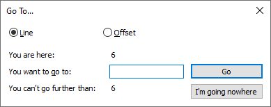

Search Actions
There are multiple methods to search (and replace) text in files. You can also mark search results with a bookmark on their lines, or highlight the textual results themselves. Generating a count of matches is also possible.
There are three main built-in search mechanisms: the standard (dialog-based) Find / Replace / Find In Files / Mark, the dialog-free Next / Previous search-navigation, and the Incremental Search.
All keyboard shortcuts mentioned below are the default values, but are configurable in the Shortcut Mapper. You can see the active shortcut for any menu item in the menu entry, or in the Shortcut Mapper.
Dialog-based Searching
There is a “Find” dialog box. This dialog box has one tab for each of the following features:
-
Find tab: Gives access to searching and counting.
It can be invoked directly with Search > Find or the keyboard shortcut Ctrl+F. -
Replace tab: Similar to Find tab, but allows you to replace the matched text after it’s found.
It can be invoked directly with Search > Replace or the keyboard shortcut Ctrl+H. -
Find in Files tab: Allows you to search and replace in multiple files with one action. The files used for the operation are specified by a directory.
It can be invoked directly with Search > Find in Files or the keyboard shortcut Ctrl+Shift+F. -
Find in Projects tab: Similar to Find in Files, but Project Panel files are used instead of files from a directory.
It can be invoked over the context menu of the first line of a Project Panel. -
Mark tab: Allows you to highlight all occurrences of the search target in the current document permanently.
It can be invoked directly with Search > Mark or the keyboard shortcut Ctrl+M.
The dialog has a status bar along the bottom, which can show an error message (like if the regular expression is invalid), a success message (like the count of matches or replacements), or the end-of-document message (when the search or replace reaches the end of the document). Starting in v8.7, the foreground colors for those status messages can be set using the [Style Configurator > Global Styles]](../preferences/#global-styles) > Find status: XXX settings (where XXX will be Not found or Message or Search end reached).
Prior to v8.1.3, doing any of those keystrokes (Ctrl+F, Ctrl+H, Ctrl+Shift+F, or Ctrl+M) once would open the Find dialog or bring it into focus; from the main dialog, hitting Ctrl+F would re-center the dialog (no matter which tab of the dialog you were on); but you could not use the shortcuts for the other tabs to switch between the tabs. In v8.1.3 through v8.3.2, once the dialog was active and in focus, hitting the keystrokes would switch between the tabs on that dialog; however, these versions of Notepad++ would not re-center the dialog if you hit Ctrl+F again. Starting in v8.3.3, the first hit of one of those shortcuts would bring up the dialog or bring it into focus; from there, hitting one of the other shortcuts would change tabs in the dialog (as with v8.1.3), but hitting the shortcut for the tab you are already on will re-center the dialog (so Ctrl+F then Ctrl+F will center the Find dialog, Ctrl+H then Ctrl+H will re-center the Replace dialog, and so on), giving you the full functionality of both tab-switching and dialog-centering.
Use of some “Find” family features can cause the window to close after a successful search (one or more “hits”). Some users dislike this and wish for the “Find” window to always remain open. This may be achieved by use of the optional setting: Settings > Preferences > Searching > ☐ Find dialog remains open after search that outputs to results window.
Search option choices made by the user are remembered across invocations of Notepad++.
To get a smaller version of the Dialog, with many of the options hidden, use the ∧ button in the lower right corner; to show the full dialog again, use the ∨ button. (new to v8.4.5)
Find / Replace tabs
All the search dialogs have certain features in common, though some are not available (greyed out) under certain circumstances.
-
Find what edit box with dropdown history: This is the text you are searching for.
-
Replace with edit box with dropdown history: This is the text that will replace what was matched.
-
☐ In selection: If you have a region of text selected, and this option is checked, Count, Replace All, or Mark All will only operate within the selected text, rather than the whole document (other buttons, such as Find Next, will continue to work on the whole document).
-
☐ Backward direction: Normally, searches go forward (down the page); with this option, they will go backward (up the page).
-
☐ Match whole word only: If checked, searches will only match if the result is a whole word (so “it” will not be found inside “hitch”).
- For ASCII text (text that only has newlines, tabs, and characters with codepoints 32 - 126):
- If the left and right characters of your search string are both “word characters” (letters, numbers, underscore, and optionally additional characters set by your preferences), then Match whole word only will only allow a match if the characters to the left and right of the match are non-word-characters or spaces or the beginning or ending of the line.
- If the left and right characters of your search string are both non-word characters (so not letters, numbers, underscore, and optionally additional characters set by your preferences), then the text to the left and right of your match must be word characters, spaces, and/or beginning or ending of the line.
- If the left of your search string is a word character and the right is not (or vice versa), then the characters to the left and right must be of the opposite type, or be spaces, or be the beginning/ending of a line.
- For non-ASCII text, the general concepts are the same; however, some edge cases may behave differently than you expect, and with thousands of possible Unicode characters and millions of combinations of pairs of Unicode characters, this manual cannot contain a full description.
- With either ASCII or full Unicode text, if you want full control of what counts as a “word” or a “word boundary”, use Search Mode = Regular Expression instead of using Normal with Match whole word only: Regular expressions allow you full and precise control of what is allowed before and after what you consider a “whole word”, rather than relying on someone else’s definition.
- For ASCII text (text that only has newlines, tabs, and characters with codepoints 32 - 126):
-
☐ Match case: If checked, searches must match in case (so a search for “it” will not find “It” or “IT”). The regular expression
iflag will override this checkbox, where(?i)will make the search case insensitive, and(?-i)will make the search case sensitive. -
☐ Wrap around: If checked, when the search reaches the end of the document, it will wrap around to the beginning and continue searching. (See more in Wrap around section, below.)
-
Search Mode: This determines how the text in the Find what and Replace with text fields will be treated.
- ☐ Normal: All text is treated literally.
- ☐ Extended (\n, \r, \t, \0, \x…): Use certain “wildcards”, as described in Extended Search Mode (below).
- ☐ Regular Expression: Uses the Boost regular expression engine to perform very powerful search and replace actions, as explained in Regular Expressions (below).
- ☐ . matches newline: In regular expressions, with this unchecked, the regular expression
.matches any character except the line-ending characters (carriage-return and/or linefeed); with this checked,.also matches the line-ending characters. As an alternative to using this checkbox, begin the Find what box text with(?-s)to obtain the unchecked behavior of . matches newline, or with(?s)to get its checked behavior.
- ☐ . matches newline: In regular expressions, with this unchecked, the regular expression
-
☐ Transparency: These settings affect the dialog box. Normally, the dialog box is opaque (can’t see the text beneath), but with these settings, it can be made semi-transparent (can partially see the text beneath).
- ☐ On losing focus: If this is chosen, the dialog will be opaque when you are actively in the dialog box, but if you click in the Notepad++ window, the dialog will become semi-transparent.
- ☐ Always: If this is chosen, the dialog will be semi-transparent, even when you are actively in the dialog box.
- Slider Bar: Sliding it right makes the dialog more opaque; sliding it left makes it more transparent.
- Be careful when sliding it to the extreme left: You might not be able to see the dialog box anymore.
- By (temporarily) setting it to Always, you can see how transparent the dialog will be while moving the slider, which can help prevent making it too transparent to see.
The various action buttons available include:
-
Find Next: Finds the next matching text.
- ☐ The unlabeled checkbox near the Find Next button changes the single Find Next button into two buttons with ▲ and ▼ Find Next triangle arrows, which mean “search backward / find previous” and “search forward / find next”. Hovering over this checkbox with the mouse will, after a slight pause in movement, pop up a tooltip indicating “2 find buttons mode” to remind you of its utility.
-
Count: Counts how many matches are in the entire document, or in the specified direction, or possibly ☐ In selection, and shows that count in the message section at the bottom of the dialog box.
-
Find All in All Opened Documents: Lists all the search-results in a new Search results window; searches through all the file buffers currently open in Notepad++.
-
Find All in Current Document: Lists all the search-results in a new Search results window; only searches the active document buffer.
-
Close: Closes the search dialog.
-
Replace: Replaces the currently-selected match. (If no match is currently selected, it behaves like Find Next and just highlights the next match in the specified direction.)
- On the Replace tab, there is an up-down arrow button ⇅ near the Find what and Replace with inputs which swaps the values of those two inputs, to make it easy to do the opposite replacement of the one that’s active. Please note that not all regular expression substitution escapes will have the same meaning when swapped into the search expression. (The swap feature was added in v8.2.1.)
- Notepad++ v8.5.1 extends this swap feature: You can right-click on that button to choose one of three actions:
- ⇅ Swap Find with Replace: Moves the Find what to Replace with input, and the old Replace with gets moved to the Find what input.
- ⤵ Copy from Find to Replace: Copies the Find what text to the Replace with input, but does not change the Find what input.
- ⤴ Copy from Replace to Find: Copies the Replace with text to the Find what input, but does not change the Replace with input.
- After selecting an action from this menu, that action is immediately performed, and the button changes its icon to indicate the new mode for that button.
- Notepad++ v8.5.2 replaces the right-click menu with a pull-down menu (▼) on the swap button, to make it more obvious that it can be changed.
-
Replace All: With ☑ Wrap around checked, it makes one pass through the active document, from the very top to the very bottom, and replaces all occurrences found. With ☐ Wrap around unchecked, it searches from the caret to the end of the file (if ☐ Backward direction is unchecked) or from the beginning of the file to the caret (if ☑ Backward direction is checked) and replaces all occurrences found in that region.
-
NOTE: For regular expressions, this will be equivalent to running the regular expression multiple times, which is not the same as running with the
/gglobal flag enabled that is available in the regular expression engines of some programming-languages. -
To clarify the Replace All results, depending on the condition of the various settings:
Previous
SelectionWrap Around Backward Direction In Selection Range NO OFF OFF OFF From CARET location to END of file YES OFF OFF OFF From START of selection to END of file NO OFF ON OFF From START of file to CARET location YES OFF ON OFF From START of file to END of selection YES -/- -/- ON From START of selection to END of selection -/- ON -/- OFF From START of file to END of file The Previous Selection column indicates that a range of text has been selected already. The Wrap around and Backward Direction and In Selection columns refer to the setting of the checkboxes described above. The Range column describes the range of the document that is affected by the Replace All. A value of “-/-” means that the setting does not influence the outcome for that combination of conditions.
-
See more in Wrap around section, below.
-
-
Replace All in All Opened Documents: Same as Replace All, but goes through all the documents open in Notepad++, not just the active document.
The above actions may be initiated via mouse by pressing the appropriate button, or via special Alt key combinations. Notepad++ can underline a single character in the text of most of the buttons (oftentimes, it is automatic; however, if you ever cannot see the underlines, then just press the Alt key, and they will appear). Pressing Alt and one of the underlined characters will be the same as pressing the same button with the mouse, i.e., the chosen action will be initiated. The Alt technique works for controls other than buttons as well, e.g., a checkbox control can be checked/unchecked via pressing its Alt key command.
Find Next has a special way of being invoked by keyboard control. Pressing Enter when the Find dialog has input focus will initiate the Find Next command in the direction indicated by Backward direction. Pressing Shift+Enter when the Find dialog has input focus will run the Find Next in the opposite direction as that indicated by Backward direction. Hovering over the Find Next button with the mouse will, after a slight delay, pop up a tool tip indicating Use Shift+Enter to search in the opposite direction as a reminder of this capability.
When a find-family function is invoked via the Search menu, toolbar, or keyboard combination, the word at the caret (or the selected text, if any) is automatically copied into the Find what edit box. This behavior cannot be disabled; it always happens. To avoid this in a limited way, use the mouse to switch to an already-open Find dialog, or make sure your caret is not “touching” a word and that there is no active selection when invoking the find-family command. Aside: This auto-copy feature can be exploited to get multi-line data into the Find what edit box, impossible by merely typing into the box. Simply select the multi-line text that you want to search for, and then call up the Find dialog via one of its functions. The selected text will appear as usual in the Find what box. The line-ending character(s) won’t be visible, but they will be there and will be matched when a search/replace action is initiated.
A valid Find what edit box entry length ranges from 1 to 2046 characters. A valid Replace with edit box entry length ranges from 0 to 2046 characters. Any text entered/pasted into these boxes beyond the 2046th character is simply ignored when an action is invoked. Note that a replacement operation with a zero-length Replace with box entry is effectively a deletion of the matched text.
Selecting Search Mode of Regular expression will cause the Match whole word only option to become unchecked and disabled (greyed out). A possible workaround to allow doing this type of searches is to add \b to the beginning and end of your regular expression Find what text.
The Find what and Replace with edit boxes have a dropdown arrow which allows the user to repeat searches conducted previously. For a given run of Notepad++, the search history can grow rather large; when Notepad++ is exited, it only saves the last 10 items in the history by default; number of search/replace terms retained may be changed by editing the config.xml configuration file, per Preferences for Advanced Users. The Find in Files tab’s Filters and Directory text boxes have this “history” feature as well. This history can be activated by clicking on the down-arrow with the mouse (or, equivalently, pressing Alt+down) to “drop down” the box, or directly (without dropping) by using the down (and/or up) keys – be careful though, sometimes when editing a control with the history feature, a user will accidentally hit an up or down arrow key when they really mean to press left or right arrow; this unfortunately wipes out the search/replace expression (as those are edited most often) that was being worked on and replaces it with some different text from the history buffer. Unwanted items in the histories may be removed by dropping-down the box, highlighting the item to be removed, and pressing the Delete key.
The In selection option will automatically be chosen by Notepad++ if a Find dialog window is opened when more than 1024 characters occur in the active selection. The selected text will also be placed in the Find what box. Running a Count or Replace All action without making other changes to the search parameters will result in Count: 1 match or Replace All: 1 occurrence was replaced, respectively, which is likely not what was intended. The proper resolution for this situation is to change the Find what text if the intention is to search within-selection, or deselect In selection if the intention is to search for a fairly long block of text.
The status bar area of the Find dialog keeps the user informed of what occurred during an action. For example, it might say Mark: 1 match or Find: Invalid regular expression. Colors are used in the status bar for emphasis: red for some sort of error; green or blue for various success or general information. (Starting in v8.7, the foreground colors for those status messages can be set using the [Style Configurator > Global Styles]](../preferences/#global-styles) > Find status: XXX settings (where XXX will be Not found or Message or Search end reached).)
Important remark: When the regular expression search mode is invoked, the red alert error message “Find: Invalid regular expression” appears ONLY when you hit the Find Next button. All other possible actions lead to simply notify you that no result occurs, whereas, in fact, your search regular expression is just malformed. So, always do a Find Next search first, to test the validity of your regular expression input.
Notepad++ uses a flashing of the Find dialog window and the main Notepad++ window itself (when the Find dialog is not open) to indicate that search text has not been found (or possibly that a Wrap around in the search has occurred). In general, if a search results in no matches, and the Find dialog window is open, that window will flash briefly as a failure indication. If the Find dialog window is NOT open, and a failed search is initiated (e.g. via Find Next on the Search menu), the main Notepad++ window will flash briefly, again, as an indicator of the lack of success. With the Find dialog window closed, but with Wrap around previously activated, a search that causes a wrap at an end of the file to occur will also cause the Notepad++ main window to flash. In addition, audible feedback will be provided if a Find Next or Replace action results in the Find what text not being encountered; the sound can be muted using the Mute all sounds option in Settings > Preferences > MISC..
If a search action is invoked by keyboard command with the Find dialog window open and input focus in the editing window, an unsuccessful search will result in input focus being changed to the Find window.
Disclaimer: It is Notepad++'s design intention to fulfill some basic searching/replacing capability. As such, Notepad++ searching is not infinitely flexible and capable of meeting all needs. For such power needs, please turn to external tools, some of which integrate well with Notepad++. Integrating well means that after such tools produce results, they can tell Notepad++ which files to open and which line and column numbers to move the caret to, in order to work with matched results. Examples of such power file/text searching tools might be: “GrepWin”, “PowerGREP”, “FileSeek”, “Everything” and many others.
Wrap Around
-
When executing a Find Next or a single-step Replace, the document text is examined for a match starting at the caret position and proceeding forward toward the end-of-file; if the search text is not found and ☐ Wrap around is not checkmarked, the search reports that it can’t find the text and stops. However, if ☑ Wrap around is checkmarked in this situation, searching begins again from the start-of-file (i.e., it wraps around) and text is examined until the caret position is reached (or a search hit occurs).
-
When executing a “Find Previous” using ▲ (or executing a Find Next with ☑ Backward direction checkmarked) or a single-step Replace (with ☑ Backward direction checkmarked), the document text is examined for a match starting at the caret position and proceeding backward toward the start-of-file; if the search text is not found and ☐ Wrap around is not checkmarked, the search reports that it can’t find the text and stops. However, if ☑ Wrap around is checkmarked in this situation, searching begins again from the end-of-file (i.e., it wraps around) and text is examined until the caret position is reached (or a search hit occurs).
-
In other single-file search actions, ☑ Wrap around may be thought of as “affect entire file” and caret position becomes irrelevant; the file will be processed in one pass from start-of-file to end-of-file.
-
In multiple-file search actions (like Find All in All Opened Documents, or the Find in Files or Find in Projects tabs), the ☑ Wrap around state is completely ignored, as those actions always start at the beginning of each file and search through to the end in the forward direction.
Find in Files tab
Find in Files allows both finding and replacing. You can choose an extension filter (Filters:), the containing folder (Directory:), and whether to also process hidden files or subfolders.
The Filters list is a space-separated list of wildcard expressions that cmd.exe can understand, like *.doc foo.*.
-
Wildcards can include
*for zero or more of any character, and?for exactly one of any character. -
Most characters work as literals. However, space is used as the separator, and thus cannot be used as a literal in your filter. Some punctuation characters have special meanings (like the
?and*wildcards, or the!exclusion or!+\for recursive exclusion), and cannot be used as literals. Also, the;causes problems, so even though Microsoft allows it in file and path names, using a;in the Filters box will not work as you might hope. If you want to match a space or a semicolon;or other problematic-punctuation in your file or folder for your Filter (whether for inclusion or exclusion), then use the*and/or?wildcards instead. (Sox?y.txtwill match the filex;y.txtorx y.txt(with a space betweenxandy).) And sorry, no, you cannot use quotes around a path-with-spaces to allow the spaces to work as literals: the space is a separator in this field. -
If you have a blank filter, it is implied to be
*.*. -
You can also exclude certain file patterns by prefixing the filter with a
!; for example, Filters:!*.bin *.*will exclude files matching*.binfrom the search results, but include any other filename. -
As of Notepad++ v8.2, you can also exclude particular folders from the search: The exclusion operator is always
!at the beginning of the expression, so in order to distinguish folder from file,\should be used as prefix of the folder name/pattern, following!. That allows the exclusion of the directories under the root directory you want to search (the 1st level of matched directories). If users need to exclude folders with the same name (or names matching the specific pattern) in all levels, the+should be put between!and\to exclude them recursively. For example:!\testswill not search any files in thetestsfolder,!\bin*will not search any files in thebinfolder orbin64folder (or any other directory that matchesbin*),!+\log*will recursively not search any files in folders that start with log (so directories like.\log,.\logs,.\other\logfiles,.\many\layers\deep\logwill all be excluded from the search).
Note: There is no opposite (“inclusive”) version of the folder-exclusion syntax. This means that other than checking ☐ In all sub-folders, you cannot include specific folders in the search. In particular, you cannot include specific subfolders of excluded folders (
!\skip \skip\exceptThiswill not work to skip the\skipsubfolder but to still search the\skip\exceptThissubfolder). -
As of Notepad++ v8.2, if you hover your mouse cursor over the Filters label, a helpful popup will show example syntax to you.
-
Please also note that the PathMatchSpec() Windows API is being used for the Filters, as its behavior departs from cmd.exe wildcard parsing sometimes. To find only files that have no extension, you cannot just say
*.despite this filter working in a Windows command prompt. Instead, you can search for any file that doesn’t have at least one letter in the extension:!*.?*.
The Directory is the containing folder for where to search. It has three options that affect its behavior:
- ☐ Follow current doc ⇒ If checked, it will default to searching the folder that contains the current active document.
- In v8.7.4 and earlier, if this is checked, it will initialize the Directory to “default” to the current document’s directory when you first launch Find in Files dialog, or if you toggle the checkbox off and then back on. (Note that “first launch” means that if you change the active tab while the dialog is still open, the Directory field will not change.) If you manually change the directory (either through typing, or using the
...button), it will search the newly-entered directory, rather than using the directory it defaulted to. The next time you launch the dialog, it will update the default directory again (assuming the option is still checked). - The state of this checkbox is saved in a config file (the
fifFolderFollowsDocattribute inconfig.xml), so your choice for this option is remembered from one run of Notepad++ to the next. - In v8.7.5, this checkbox was moved to Settings > Preferences > Searching > ☐ Fill Find in Files Directory Field Based On Active Document. This version also added a « button which, as the hover says, will “Fill directory field based on active document”, so you can manually re-populate the Document field based on the current document, even if you have changed the document.
- In v8.7.4 and earlier, if this is checked, it will initialize the Directory to “default” to the current document’s directory when you first launch Find in Files dialog, or if you toggle the checkbox off and then back on. (Note that “first launch” means that if you change the active tab while the dialog is still open, the Directory field will not change.) If you manually change the directory (either through typing, or using the
- ☐ In all sub-folders ⇒ If checked, it will recursively search sub-folders of the given folder.
- ☐ In hidden folders ⇒ If checked, it will search hidden sub-folders as well as normally-visible sub-folders.
Find in Projects tab
Find in Projects allows both finding and replacing search items in Project Panels. The files used for these operations are specified by the following check marks:
- ☐ Project Panel 1 ⇒ If checked, all files listed in Project Panel 1 will be included into the search/replace operation.
- ☐ Project Panel 2 ⇒ If checked, all files listed in Project Panel 2 will be included into the search/replace operation.
- ☐ Project Panel 3 ⇒ If checked, all files listed in Project Panel 3 will be included into the search/replace operation.
Only Project Panels which are currently open can be searched. The checkmarks of Project Panels which are not currently open are grayed out.
The Filters list works the same way as described in the previous Find in Files section.
Mark tab
The Mark tab from the Find/Replace dialog will perform searches similar to the Find tab, in the current document or selection:
-
When Bookmark line is checked, a bookmark is dropped on each line where an individual hit occurs. In the case where an individual hit spans multiple lines, each line in the span will receive the bookmark.
-
Otherwise, the matched pattern is highlighted according to the Settings > Style Configurator > Global Styles > Find Mark Style setting.
In either case, the Mark All button will perform the marking. Similar to Replace All, Mark All will search from the beginning of the document to the end if Wrap around is checked; if Wrap around is not checked, it will mark from the caret position to the end of the file (if Backward direction is not checked) or from the beginning of the file to the caret position (if Backward direction is checked).
To control whether highlighting or bookmarks accumulate over successive searches, use the Clear all marks button to remove marks, or check Purge for each search for this action to be performed automatically on each search. When the Clear all marks button is pressed, any marked text will have the marking background coloring removed; additionally, any bookmarks previously set will be removed if the Bookmark line checkbox is checked.
Once some text in a document is marked, it may be copied to the clipboard by pressing the Copy Marked Text button. This feature is also invocable from the Search menu, and in order to be used in a macro, the Search menu version of this copy command must be used.
Highlighting is also available in Incremental search, and the style setting is Settings > Style Configurator > Global Styles > Incremental highlight all instead.
Bookmarks vs Marks
Bookmarks and Marks are two slightly different things, though the Mark tab can affect both. A Mark will highlight the individual match(es) in the text; a Bookmark affects the whole line, and is usually displayed as a circle (●) in the margin (though Settings > Preferences > Margin/Border/Edge has a ☐ Display bookmark toggle that will influence whether Bookmarks have that circle indicator or not).
Bookmarks, whether visible or not, have a menu that can control and navigate Bookmarks. This menu is accessible either via Search > Bookmark or by right clicking in the Bookmark portion of the margin (between the line number and the text, if line numbers are displayed). This menu has options to toggle the state of the current line’s Bookmark, to navigate to the next or previous Bookmark, to clear all Bookmarks, to cut or copy Bookmarked lines, to paste over (replace) Bookmarked lines, to delete Bookmarked (or non-Bookmarked) lines, or to invert all the Bookmarks (so all lines with a Bookmark have the Bookmark removed, and all lines without a Bookmark have a Bookmark added).
Search results window
After running one or more Find All in … commands, a new Search results window appears, and within it is placed a Search results tab. The Search results window may be opened and/or given input focus by using the menu command Search > Search Results Window or the F7 keyboard shortcut. Note: That menu command will seem to not do anything if there haven’t been any Find All in … commands run since Notepad++ was opened.
Definition: Find All in … commands include:
| Which Find All in … command | Find window owner tab |
|---|---|
| Find All in All Opened Documents | Find |
| Find All in Current Document | Find |
| Find All | Find in Files |
| Find All | Find in Projects |
The Search results window by default appears docked at the bottom of the Notepad++ main window. Like other such windows, it can be moved or even be a free-floating window.
From Find All in … searches, three types of sections are added to the Search results window. First is a line describing what was searched for, how many total matches (known as “hits”) occurred (this is also shown in the title bar for the window, for the most recently-occurring search), and how many files had matches. Second is a line that shows the filename with the matches and the count of matches for that file (this type will be repeated if the search found multiple files with matches). Last comes the details about the matches found, including line number and the line contents with the matched text emphasized. The default emphasis is red text on a yellow background, but this may be changed in the Style Configurator’s “Search result” Language area.
When Notepad++ populates the Search results window, it does so using one line for each match found by the search. Note that this can and often does end with the same source file line being repeated multiple times in the output. An example of this would be if you are searching for “the” in the line of text that reads “Now is the time for all good men to come to the aid of their country”; the Search results window would list the line three times, twice with each word “the” called out in red text with a yellow background, and a third time with “the” in “their” similarly emphasized. However, multiple findings of the same search term may be collapsed into one search result by checking the option Settings > Preferences > Searching > ☐ Search Result window: show only one entry per found line.
When the Search results window has input focus, the currently active line has a different background color, much like how the main editor window does by default. Unlike the main editor window, where the current-line background feature may be turned off, the Search results window always has a background highlight for its active line.
Use the up and down arrows to navigate within the Search results window when it has input focus. Double-clicking with the mouse or hitting Enter when input focus is on a specific match will move the editor window to that match and cause its text to be selected.
Other ways to navigate back to an editor window via the Search results window matches include the Search menu items Next Search Result (keyboard: F4) and Previous Search Result (keyboard: Shift+F4). These can be invoked regardless of where input focus is in Notepad++.
The Delete key can be used to delete individual results, file matches or whole search matches in the Search results window, depending on which type of line is active when the key is pressed. As the result history is hierarchical, that is, tree-like, pressing Delete when in a higher-level element of the tree removes that whole branch. Thus:
| Pressing Delete when Search results active line starts with… | What is removed |
|---|---|
| the text: “Search” | that “Search” line, all pathname lines under it, and all “Line” lines under the pathname lines |
| a pathname | that pathname line and all “Line” lines under it |
| the text: “Line” | only that line |
Multiple searches are listed under separate headers, which are “foldable”, so you can hide or unhide results from previous searches. When you run a new search, previous searches are folded closed.
If the source file lines are judged by Notepad++ to be too long when they are copied to be placed in the Search results window, they are truncated and … is added at the end. In this case, matched text occurring in the line after the … position isn’t emphasized. However, using a method to return to the editor window (e.g. pressing Enter) results in the correct selection of matching text there. The length limit is 1024 characters; this includes the match line number information and other formatting.
If a search is conducted such that a match which spans two or more lines occurs, only the contents of the first line of that match is copied into the Search results window. However, using a method to return to the editor window (e.g. pressing Enter) results in the correct selection of multi-line matching text there.
Starting in v8.6.1, the header rows for each search include a shorthand notation for the search options that were active when that search was run.
For example: Search "foo" (1 hit in 1 file of 1 searched) [Normal: Case/Word] .
- The shorthand notation for the options is found between the square brackets at the end of the header. (In the example,
[Normal: Case/Word]) - The search mode is listed before the colon
:and can be one of the valuesNormal,Extended,Regex,Regex.(The.in a regex variant reflects checkmark state of the. matches newlinecheckbox when the search was run.) - The options are found after the colon
:, and can be one of the valuesCase,Word, orCase/Word.- Those option indicators will be present if the
Match casecheckbox was checkmarked,Match whole word onlycheckbox was checkmarked, or both checkboxes were checkmarked. - If neither of those checkboxes are checkmarked, then the shorthand notation will only include the search mode, and not include a colon (since there is no option to follow the colon).
- Those option indicators will be present if the
RightClick commands in the client area of a Search results window’s tab
Copying text from the Search results window
There are two ways to copy exact text from the Search results window: Make sure input focus is in the Search results window by selecting some text and press Ctrl+C, or RightClick to invoke the context menu and select Copy. These two copy mechanisms produce identical results. Another choice is to use the context menu’s Copy Selected Line(s) command; this copies entire lines from the results, excluding search information (called “metadata”).
More precisely:
| RightClick item | What gets copied when RightClick > Copy Selected Line(s) is run |
|---|---|
| a line with line # info | the entire line of the RightClick but without line number text |
| a pathname header line | all the lines for that single file without pathname or line number text |
| a “search” header line | all the lines for that search (1 or more files) without search header, pathname or line number text |
Tip: It is possible to select and copy a rectangular selection of data from the Search results window. This is done using the usual Shift+Alt+arrow keys or by holding Alt+LeftClick and dragging with the mouse. This is really only practical when using the Ctrl+C method of copying; RightClick > Copy Selected Line(s) doesn’t work this way.
In v8.7.5, the algorithm is standardized to:
- If the selection/caret intersects any
Lineline(s), copy only the intersectedLineline(s). - If the selection/caret is on a single line, and that line is a “path” line, copy all of the child
Lineline(s) under that path line. - Finally, if the selection/caret is on a single line, and that line is a
Searchline, copy all of the childLinelines(s) under that search tree (which could contain many “path” subtrees, all withLineline(s) that would be copied).
Copying path(s) from the Search results window
There is a capability to copy the list of files containing hits from past searches (v8.0.0 and later). The Copy Selected Pathname(s) context menu command (known as Copy Pathname(s) from v8.0.0 to v8.7.1) copies to the clipboard the full pathnames of all the files for any lines selected in Search results. The list copied to the clipboard will contain one line for each pathname. From v8.0.0 to v8.7.1, Copy Pathname(s) would copy all pathnames from all prior searches. Starting in v8.7.2, if you have selected search results that include a pathname line (even partially), or if the caret with no selected text is on one of the search result pathname lines, then this action will copy the pathname associated with each search result entry so selected. Running this action on never-saved files, like the new 1 tabs (even if they’ve been manually renamed but not yet saved), will use the tab’s name as the “pathname”, since there is no filesystem path associated with such tabs. To mimic the behavior of Copy Pathname(s) from earlier software in v8.7.2 and later, select all text in search-results before running the action.
Other commands
The Search results window/tab accumulates results from every Find All in … search the user does; the results from old searches remain until the user removes them. Individual results can be deleted with the Delete key, or all previous results can be deleted by invoking Clear all. Stale results can be removed to reduce visual clutter, or when it is desired that a follow-on action should not be affected by old results. An example of this would be the Open all command which opens all files listed in the Search results tab that have previously had hits. If the search history in Search results is really long, it may not be desirable to open all files listed there, so using Clear all before doing some new searches with the intent to Open all afterwards may be the thing to do.
The Select all command is self-explanatory: All text in the Search results tab is selected.
The contents of the Search results tab are in the form of a tree. When Notepad++ adds to the result history, the user can see all of the information from the recently-added search. However, before adding new results, Notepad++ will fold all previous result data.
The user can fold/unfold “branches” of this tree. To fold, click with the mouse on the little box symbol with an interior -, found to the left of each line. After doing so, that part of the tree will be folded (removed from view) and the first line of the branch (remaining visible) will then show a + in the box symbol. To unfold an individual item that has previously been folded (either by the user or by Notepad++'s automatic mechanism), simply click the box symbol with the +. That branch will then be expanded and shown again.
The Fold all and Unfold all commands perform the corresponding actions on all elements of the entire result history in the Search results window at once. (These were called Collapse all and Uncollapse all before v8.4.6.)
Starting in v8.7.2, Open selected pathname(s) will open the file(s) associated with selected search results (following the same selection/caret logic as Copy Selected Pathname(s) (described above); if the file is already opened, it will not be opened a second time (but it will activate that file’s tab if there’s only one in the selection.)
Searching in previously-found results (secondary searching)
Assume that you have done a search and your results are in a tab in the Search results window. Now you’d like to conduct a search but with a scope of only the files that have previous matches. Or maybe you want to look only in the lines matched by previous searches, not only the matched files, tightening the search criteria even more. Can you do this sort of second-level searching with Notepad++? Yes, by using RightClick in the Search results window client area and selecting Find in these search results….
Selecting Find in these search results… will cause a window to pop up, which looks much like the standard Find window, but stripped down a bit. Once you input your search parameters and choose Find All, a new Search results tab will open (in the Search results window) with the results of the “refined” search.
The popup window has a parameter not available in the searches described earlier: ☐ Search only in found lines. Checking this box limits the search to lines that appear in matched files in the parent Search results window. Unchecking the box will cause the new search to examine previously matched files in their entirety. When a search has been limited to previously-found lines, its results will indicate this by using this type of output: Search "___" (__ hits in __ files - Line Filter Mode: only display the filtered results) as opposed to the normally seen: Search "___" (__ hits in __ files)
Tip: Use the RightClick option Clear all to limit the scope of these types of searches (before invoking the secondary search!) – remember: a Find in these search results… search will look in files matched by all previous searches whose results are still present in the parent Search results tab.
Tip: Since the newly opened Search results window also has a RightClick menu, you may do another Find in these search results… based upon the new results, focusing your search for some bit of data even more. This type of refinement may be repeated as often as desired. [Note that the title bar of the window does not show the hit count of the currently active tab, but rather shows the hit count of the first Search results tab of the window.]
Note: The commands that switch input focus to the Search results window always activate the first Search results tab, not any additional Search results tabs that may have been created.
Note: The contents of the Search results window are discarded upon Notepad++ shutdown. If it contains data of importance, it should be copied using one of the methods above, and saved in a more-permanent location.
Search results configuration options
There are currently two ways to configure the Search results window behavior, both located in the RightClick context menu:
- Word wrap long lines
- Purge for every search
When Word wrap long lines is turned on (checked), the Search results window text wraps at the right edge, and is continued on the next visible line. With the feature off, the window has a horizontal scrollbar, so that the rightmost text on long lines may be scrolled into the user’s view.
To some users older search results accumulating are an annoyance, so Notepad++ supports a setting that, after turned on, removes any old search results from the window before populating it with new ones. To set or clear this setting, right-click anywhere in the Search results window, then click on the Purge for every search entry to change that setting: There will be a checkmark to indicate it’s already on, and no checkmark to indicate it’s off. Note: Clicking this option doesn’t immediately purge the old results; instead, searches made subsequent to enabling this option will purge the old results.
Dialog-free search/mark actions
Searching
The following commands, available through the Search menu or keyboard shortcuts, perform a search without invoking a dialog (with the default shortcuts):
- Find Next (F3)/ Find Previous (Shift+F3): Repeat searching the current search target, either down or up.
- The “current search target” is whatever Find what string was most-recently active from either the Find/Replace dialog or from the Select and Find Next / Select and Find Previous commands.
- Select and Find Next (Ctrl+F3) / Select and Find Previous (Ctrl+Shift+F3): Search for the word the caret is in, or the selected text, down or up. The searched word or selection is stored in the find history, and the search can be repeated with Find Next / Find Previous.
- The specific search behavior:
- copies the selected text to Find what box of Find window for future use, then uses that same string for this specific search
- uses the following set of options:
- uses ☐ Match case setting from Find window
- uses ☐ Match whole word only setting from Find window
- uses ☐ Wrap around setting from Find window
- uses Search mode = Normal (regardless of its current setting in the Find window)
- (all mentions of the Find window in this search description are still true even if the Find window is not currently visible)
- The specific search behavior:
- Find (Volatile) Next (Ctrl+Alt+F3) / Find (Volatile) Previous (Ctrl+Alt+Shift+F3): Search for the word the caret is in, or the selected text, down or up.
- The searched word or selection is not stored in the find history, and the search will not be repeatable with Find Next / Find Previous. (“Volatile” here means “not stored”.) However, because it will have moved the caret and selection to the next match, repeated Find (Volatile) Next / Find (Volatile) Previous works as expected.
- The specific search behavior:
- uses the selected text as the search text, but does not overwrite the existing Find what value in the Find dialog
- uses the least-strict set of options, providing the most flexibility in the results provided by a volatile search:
- considers ☐ Match case to be unchecked
- considers ☐ Match whole word only to be unchecked
- considers ☐ Wrap around to be checked
- considers Search mode to be Normal
Comparison between “Select and Find Next” and “Find (Volatile) Next”
Both commands Select and Find Next and Find (Volatile) Next search based on the active selection or caret position. However, Select and Find Next stores the searched word so it’s available to a subsequent Find Next action and to the Find dialog’s Find what field, whereas Find (Volatile) Next does not store the search word for those uses. Example sequence:
-
If you do Select and Find Next command with
word1selected, then you can later use the normal Find Next command to search forword1, even if you have moved your caret or selection elsewhere toword2. Further, if no new text has been selected, the Find and related dialogs will show Find what to be the active search value. (Note: See the section on Settings > Preferences > Searching, because those options can cause other text to overwrite the Find what field independently from the Select and Find Next action, making it appear that the search string wasn’t stored.) -
If your caret is on word
word2, Find (Volatile) Next will search for the next occurrence ofword2. Now if you move your caret ontoword3and do Find (Volatile) Next, it will search for the nextword3, andword2is forgotten. This will not override the “remembered” search, so running Find Next will still be looking for the oldword1from the previous Select and Find Next, rather thanword2orword3from the Find (Volatile) Next searches.
Marking with a color/style and Highlighting
Use the Style All Occurrences of Token or Clear Style submenus of the Search menu (previously called the Mark All or Unmark All submenus) to mark or unmark all occurrences of the selected text or word the caret is in (the “Token”) if there is no active selection. You have a choice of five different colors/styles (numbered 1 through 5) in which to mark text in this manner. The Style One Token (previously, Mark One) submenu options work similarly, but only on the single occurrence of selected text or caret word.
The settings for each of the 5 available colors/styles are Settings > Style Configurator > Global Styles > Mark style #.
If you’ve highlighted some groups of text in this manner, and you wish to copy those sections, the Copy Styled Text submenu of the Search menu will allow you to do that. Quick search for previously marked text is possible via the Jump Up or Jump Down submenu choices.
Note: In older versions of Notepad++, the Mark All submenu name can cause some confusion between an identically-named action button in the Mark tab of the Find family dialog. The two types of “marking” are different but do share some features. For example, the Copy Styled Text submenu commands will allow you to copy text that has been styled with number 1 through 5 styling OR text that has been marked using the Mark tab of Find. This has been improved by renaming the menu to Style All Occurrences of Token.
You can also cause all occurrences of the word at the caret to get dynamically highlighted if you activate Smart Highlighting; the mark style then is Settings > Style Configurator > Global Styles > Smart Highlighting. You may choose there whether the matching should be sensitive to case.
You activate smart highlighting through Settings > Preferences > Highlighting > Smart highlighting > Enable. You can change whether or not the smart highlighting is case sensitive or requires whole words using other options in that preferences dialog.
Manipulating Bookmarks
The Search > Bookmark menu allows you to navigate and manipulate Bookmarks and Bookmarked lines (see “Bookmarks vs Marks” for more on the Bookmark feature).
- Toggle Bookmark - Toggle the state of the Bookmark indicator on the active line.
- Next Bookmark - Navigate to the next Bookmark in the active document.
- Previous Bookmark - Navigate to the previous Bookmark in the active document.
- Clear all Bookmarks - Remove all Bookmark indicators in the active document.
- Cut Bookmarked Lines - Place all Bookmarked lines in the Clipboard and remove those lines from the active document.
- Copy Bookmarked Lines - Place all Bookmarked lines in the Clipboard but leave those lines in the active document.
- Paste to (Replace) Bookmarked Lines - Paste the contents of the Clipboard to replace the contents of all Bookmarked lines. (Thus, if your Clipboard is
Hello World, then every Bookmarked line will sayHello Worldafter this action.) - Remove Bookmarked Lines - Remove all Bookmarked lines from the active document.
- Remove Non-Bookmarked Lines - Remove all lines that are not Bookmarked from the active document, leaving only the Bookmarked lines.
- Inverse Bookmark - Every line that was Bookmarked is now not Bookmarked, and every line that was previously not Bookmarked is now Bookmarked. (Equivalent to choosing Toggle Bookmark once on every line in the active document.)
These actions are also available by right-clicking on the Bookmark margin.
Change History
The Search > Change History menu allows you to easily navigate between the lines shown as changed by the Change History Margin (see Settings > Preferences > Margins/Border/Edge > Change History). (This menu was added in v8.5.5.)
- Go to Next Change - Move to the next line that is indicated as being changed.
- Go to Previous Change - Move to the previous line that is indicated as being changed.
- Clear Change History - Removes the active change history, so the Change History Margin appears blank, as it did when you first loaded the document.
Finding characters in a specific range
It is sometimes desirable to search for characters by their codepoint (underlying numerical value), and even to search for text that matches a range of character codepoints (like finding all characters from a to z).
Notepad++ provides a dialog for doing this character-range search, available using the Search > Find characters in range… action.
A custom range of characters can be asked for, as well as either half of the 0..255 range: ASCII covers the lower half, non-ASCII covers the upper part. Note that entries should be in decimal notation, and that values above 255 are not handled in a useful way (so fancy Unicode characters cannot be searched for in this manner).
This search may proceed up or down, and optionally wraps around. Hit Find to run this range-search, and hit Close to leave the dialog.
The regular expressions search mode (described below) also provides a way to specify a range (or multiple ranges) of characters using a character class, but that mode can be difficult for inexperienced users, so this dialog has been provided as an easier alternative.
Incremental Search
Incremental search is similar to the searching capabilities found in your favorite web browser (like Firefox or Chrome). You can launch it from the Search > Incremental Search menu, or the keyboard shortcut (Ctrl+Alt+I).
This command will show a small region at the bottom of the Notepad++, which has a few simple features.
- Clicking the X button allows you to close the Incremental Search window and return to the editor window. If a control in the Incremental Search window currently has input focus, e.g. if you are typing into the Find box, another way to close the window is by pressing the Esc key.
- The Find box is where you type your literal search term. As you type, the editor window will move the selection to the next match for the contents of Find (hence, the “incremental” search because as you “incrementally” change the search term, it will update the match).
- The < and > buttons navigate backward and forward through the search results (wrapping around when it reaches the end or start of the document).
- If the ☐ Highlight all checkbox is not checked, it will only highlight the current match; if it is checked, all matches will be highlighted.
- If the ☐ Match case checkbox is checked, the results will only match if case is exactly the same, otherwise case doesn’t matter.
- To the right of those checkboxes, a message about the results will occur: either the number of matches, a message that indicates that you’ve wrapped around to the top or bottom of the document, or “Phrase not found” if there are no matches. When there are no matches, the Find box also changes color.
Starting in v8.6.1, the shortcut keys for Find Next and Find Previous (defaults are F3 and Shift+F3, respectively) work when input focus is in the Incremental Search window, e.g. when you are typing into the Find box, and you want the editor to move to a different match. This avoids needing to reach for the mouse in order to press the > or < buttons to move between matches.
Other Search-menu Commands
There are a few Search-menu commands that don’t fit within other categories:
- Go to…: brings up a dialog that allows you to navigate to a specific location in the document:

☐ Line: When this radio button is selected, the Go action will move the caret to a specific line number in the document (line 1 is the first line).☐ Offset: When this radio button is selected, the Go action will move the caret to a specific byte in the document (0 puts the caret before the first byte). If you choose an offset that would put the caret in the middle of a multi-byte character, the caret will go after that character. For example, if your file starts with☺1(in UTF-8 mode, where☺is encoded by 3 bytes), then an offset of 0 will put the caret before the☺; an offset of 1 or 2 or 3 will put the caret between the☺and1; and an offset of 4 will put the caret after the1.You are here: Shows the current location of the caret, in the current Line/Offset units.You want to go to ____: This is where to input the location to move the caret, in the current Line/Offset units.You can't go further than: This is the end of the file, in the current Line/Offset units.- Go: Moves the caret to the given location.
- I’m going nowhere: Exits the dialog without moving the caret. (This is the same as a Cancel action in most dialog boxes.)
- Go to Matching Brace: Allows parentheses and braces navigation. If the caret is adjacent to the opening parenthesis
(or bracket[or brace{, then this command will move the caret to just before the matching closing-character)or]or}; similarly, if the caret is on the closing character, the command will move the caret to just before the matching opening-character. (The Style Configurator > Global Styles > Brace Highlight Style will be used to highlight the opening and closing pairs of characters.) - Select All In-between {} [] or (): Will select all the text in between a matching pair of braces
{}or brackets[]or parentheses()if the command is activated when the caret is adjacent to one of those characters; the resulting selection will include the surrounding pair of braces, brackets, or parentheses.
Search Syntax
Normal Search Mode just uses literal text. For more complicated searches, use either Extended Search Mode or Regular Expression Search Mode, which each have their own syntax, described below.
Extended Search Mode
In extended mode, these escape sequences (a backslash followed by a single character and optional material) have special meaning, and will not be interpreted literally.
\n: The Line Feed control character LF (ASCII 0x0A)\r: The Carriage Return control character CR (ASCII 0x0D)\t: The TAB control character (ASCII 0x09)\0: The NUL control character (ASCII 0x00) †\\: The literal backslash character (ASCII 0x5C)\b: The binary representation of a byte, made of 8 digits which are either 1’s or 0’s. †\b00100000will match the SPACE character (ASCII 32 is “00100000” in 8-bit binary)
\o: The octal representation of a byte, made of 3 digits in the 0-7 range. †\o040will match the SPACE character (ASCII 32 is “040” in 3-digit octal)
\d: The decimal representation of a byte, made of 3 digits in the 0-9 range. †\d032will match the SPACE character (ASCII 32 is “032” in 3-digit decimal)
\x: The hexadecimal representation of a byte, made of 2 digits in the 0-9, A-F/a-f range.\x20will match the SPACE character (ASCII 32 is “20” in 2-digit hexadecimal)
\u: The hexadecimal representation of a two-byte character, made of 4 digits in the 0-9, A-F/a-f range. †- In Unicode builds, finds a Unicode character: for example,
\u263Amatches the☺char, in an UTF-8 encoded file. - In ANSI builds, finds characters requiring two bytes, like in the Shift-JIS encoding.
- In Unicode builds, finds a Unicode character: for example,
† NOTE: While some of these Extended Search Mode escape sequences look like regular expression escape sequences, they are not identical. Ones marked with † are different from or not available in regular expressions.
Automatic Switch to Extended Search Mode
There is actually a situation where Notepad++ will automatically change your search from Normal to Extended Search Mode.
Assume you have the text:
456
abc
123
456
abc
123
If you were already in Normal Search Mode, and have the Settings > Preferences > Searching set to ☑ Fill Find Field with Selected Text, and then selected two lines of text (the first abc and 123 pair), then run the Find dialog, the Find what box will appear to contain the two lines concatenated with each other (abc123), but internally, it will search for the two distinct lines separated by a newline sequence, even though it’s in Normal Search Mode. However, if you run Find All in Current Document, the Search Results window will show the search as Search "abc\r\n123" (2 hits in 1 file of 1 searched) [Extended], showing that Notepad++ actually changed to Extended Search Mode for doing the Find All… action. And if you open the Find dialog again, you will see that the dialog is in Extended Search Mode now.
The same is true for Find All in All Opened Documents and the Find in Files and Find in Projects searches as well.
So what you need to bear in mind is that if you are in Normal Search Mode and try to search for all occurrences of a multiline string, it can change to Extended Search Mode behind the scenes. If your selected text happened to have literal text that matches an Extended Search Mode escape sequence, then the search might not do what you think it should.
The best advice is to not search for multiline text if you are in Normal Search Mode, especially if your multi-line selection includes literal backslash-followed-by-letter sequences; but if you choose to do so, understand that the Find All … family of searches can change the mode from Normal Search Mode to Extended Search Mode.
Regular Expressions
Notepad++ regular expressions (“regex”) use the Boost regular expression library v1.85 (as of NPP v8.6.6), which was originally based on PCRE (Perl Compatible Regular Expression) syntax, only departing from it in very minor ways. Complete documentation on the precise implementation is to be found on the Boost pages for search syntax and replacement syntax. (Some users have misunderstood this paragraph to mean that they can use one of the regex-explainer websites that accepts PCRE and expect anything that works there to also work in Notepad++; this is not accurate. There are many different “PCRE” implimentations, and Boost itself does not claim to be “PCRE”, though both Boost and PCRE variants have the same origins in an early version of Perl’s regex engine. If your regex-explainer does not claim to use the same Boost engine as Notepad++ uses, there will be differences between the results from your chosen website and the results that Notepad++ gives.)
The Notepad++ Community has a FAQ on other resources for regular expressions.
Note: Regular expression “backward” search is disallowed due to sometimes surprising results. (For example, in the text to the test they travelled, a forward regex t\w+ will find 5 results; the same regex searching backward will find 17 matches.) If you really need this feature, please see Allow regex backward search to learn how to activate this option.
Important Note: Syntax that works in the Find What: box for searching will not always work in the Replace with: box for replacement. There are different syntaxes. The Control Characters and Match by character code syntax work in both; other than that, see the individual sections for Searches vs Substitutions for which syntaxes are valid in which fields.
Regex Special Characters for Searches
In a regular expression (shortened into regex throughout), special characters interpreted are:
Single-character matches
-
.or\C⇒ Matches any character.- If you check the box which says . matches newline, or use the
(?s)search modifier, then.or\Cwill match any character, including newline characters (\ror\n). With the option unchecked, or using the(?-s)search modifier,.or\Conly match characters within a line, and do not match the newline characters. - Any Unicode character within the Basic Multilingual Plane (BMP) (with a codepoint from U+0000 through U+FFFF) will be matched per these rules. Any Unicode character that is beyond the BMP (with a codepoint from U+10000 through U+10FFFF) will be matched as two separate characters instead, since the “surrogate code” uses two characters. (See the Match by Character Code section for more on how surrogate codes work.)
- If you check the box which says . matches newline, or use the
-
\X⇒ Matches a single non-combining character followed by any number (zero or more) combining characters. You can think of\Xas a “.on steroids”: it matches the whole grapheme as a unit, not just the base character itself. This is useful if you have a Unicode encoded text with accents as separate, combining characters. For example, the letterǭ̳̚, with four combining characters after theo, can be found either with the regex(?-i)o\x{0304}\x{0328}\x{031a}\x{0333}or with the shorter regex\X(the latter, being generic, matches more than justǭ̳̚, inluding but not limited toą̳̄̚oroalone); if you want to limit the\Xin this example to just match a possibly-modifiedo(so “ofollowed by 0 or more modifiers”), use a lookahead before the\X:(?=o)\X, which would matchoalone orǭ̳̚, but notą̳̄̚. -
\$,\(,\),\*,\+,\.,\?,\[,\],\\,\|⇒ Prefixing a special character with\to “escape” the character allows you to search for a literal character when the regular expression syntax would otherwise have that character have a special meaning as a regex meta-character.- The characters
$ ( ) * + . ? [ ] \ |all have special meaning to the regex engine in normal circumstances; to get them to match as a literal (or to show up as a literal in the substitution), you will have to prefix them with the\character. - There are also other characters which are special only in certain circumstances (any time a character is used with a non-literal meaning throughout the Regular Expression section of this manual); if you want to match one of those sometimes-special characters as literal character in those situations, those sometimes-special characters will also have to be escaped in those situations by putting a
\before it. - Please note: if you escape a normal character, it will sometimes gain a special meaning; this is why so many of the syntax items listed in this section have a
\before them.
- The characters
Match by character code
It is possible to match any character using its character code. This allows searching for any character, even if you cannot type it into the Find box, or the Find box doesn’t seem to match your emoji that you want to search for. If you are using an ANSI encoding in your document (that is, using a character set like Windows 1252), you can use any character code with a decimal codepoint from 0 to 255. If you are using Unicode (one of the UTF-8 or UTF-16 encodings), you can actually match any Unicode character. These notations require knowledge of hexadecimal or octal versions of the character code. (You can find such character code information on most web pages about ASCII, or about your selected character set, and about UTF-8 and UTF-16 representations of Unicode characters.)
-
\0ℕℕℕ⇒ A single byte character whose code in octal is ℕℕℕ, where each ℕ is an octal digit. (That’s the number0, not the letteroorO.) This notation works for for codepoints 0-255 (\0000-\0377), which covers the full ANSI character set range, or the first 256 Unicode characters. For example,\0101looks for the letterA, as 101 in octal is 65 in decimal, and 65 is the character code forAin ASCII, in most of the character sets, and in Unicode. -
\xℕℕ⇒ Specify a single character with code ℕℕ, where each ℕ is a hexadecimal digit. What this stands for depends on the text encoding. This notation works for codepoints 0-255 (\x00-\xFF), which covers the full ANSI character set range, or the first 256 Unicode characters. For instance,\xE9may match anéor aθdepending on the character set (also known as the “code page”) in an ANSI encoded document.
These next two only work with Unicode encodings (so the various UTF-8 and UTF-16 encodings):
-
\x{ℕℕℕℕ}⇒ Like\xℕℕ, but matches a full 16-bit Unicode character, which is any codepoint from U+0000 to U+FFFF. -
\x{ℕℕℕℕ}\x{ℕℕℕℕ}⇒ For Unicode characters above U+FFFF, in the range U+10000 to U+10FFFF, you need to break the single 5-digit or 6-digit hex value and encode it into two 4-digit hex codes; these two codes are the “surrogate codes” for the character. For example, to search for the🚂STEAM LOCOMOTIVE character at U+1F682, you would search for the surrogate codes\x{D83D}\x{DE82}.- If you want to know the surrogate codes for a given character, search the internet for “surrogate codes for character” (where character is the fancy Unicode character you need the codes for); the surrogate codes are equivalent to the two-word UTF-16 encoding for those higher characters, so UTF-16 tables will also work for looking this up. Any site or tool that you are likely to be using to find the U+###### for a given Unicode character will probably already give you the surrogate codes or UTF-16 words for the same character; if not, find a tool or site that does.
- You can also compute surrogate codes yourself from the character code, but only if you are comfortable with hexadecimal and binary. Skip the following bullets if you are prone to mathematics-based PTSD.
- Start with your Unicode U+######, calling the hexadecimal digits as
PPWXYZ. - The
PPdigits indicate the plane. subtract one and convert to the 4 binary bitspppp(soPP=01becomes0000,PP=0Fbecomes1110, andPP=10becomes1111) - Convert each of the other digits into 4 bits (
Waswwww,Xasxxvv,Yasyyyy, andZaszzzz; you will see in a moment why two different characters are used inxxvv) - Write those 20 bits in sequence:
ppppwwwwxxvvyyyyzzzz - Group into two equal groups:
ppppwwwwxxandvvyyyyzzzz(you can see that theX⇒xxvvwas split between the two groups, hence the notation) - Before the first group, insert the binary digits
110110to get110110ppppwwwwxx, and split into the nibbles1101 10pp ppww wwxx. Convert those nibbles to hex: it will give you a value from\x{D800}thru\x{DBFF}; this is the High Surrogate code - Before the second group, insert the binary digits
110111to get110111vvyyyyzzzz, and split into the nibbles1101 11vv yyyy zzzz. Convert those nibbles to hex: it will give you a value from\x{DC00}thru\x{DFFF}; this is the Low Surrogate code - Combine those into the final
\x{ℕℕℕℕ}\x{ℕℕℕℕ}for searching.
- Start with your Unicode U+######, calling the hexadecimal digits as
- For more on this, see the Wikipedia article on Unicode Planes, and the discussion in the Notepad++ Community Forum about how to search for non-ASCII characters
Collating Sequences
[[._col_.]]⇒ The character the col “collating sequence” stands for. For instance, in Spanish,chis a single letter, though it is written using two characters. That letter would be represented as[[.ch.]]. This trick also works with symbolic names of control characters, like[[.BEL.]]for the character of code 0x07. See also the discussion on character ranges.
Control characters
-
\a⇒ The BEL control character 0x07 (alarm). -
\b⇒ The BS control character 0x08 (backspace). This is only allowed inside a character class definition. Otherwise, this means “a word boundary”. -
\e⇒ The ESC control character 0x1B. -
\f⇒ The FF control character 0x0C (form feed). -
\n⇒ The LF control character 0x0A (line feed). This is the regular end of line under Unix systems. -
\r⇒ The CR control character 0x0D (carriage return). This is part of the DOS/Windows end of line sequence CR-LF, and was the EOL character on Mac 9 and earlier. OSX and later versions use\n. -
\t⇒ The TAB control character 0x09 (tab, or hard tab, horizontal tab). -
\c☒⇒ The control character obtained from character ☒ by stripping all but its 5 lowest order bits. For instance,\cAand\caboth stand for the SOH control character 0x01. You can think of this as “\c means ctrl”, so\cAis the character you would get from hitting Ctrl+A in a terminal. (Note that\c☒will not work if☒is outside of the Basic Multilingual Plane (BMP) – that is, it only works if☒is in the Unicode character range U+0000 - U+FFFF. The intention of\c☒is to mnemonically escape the ASCII control characters obtained by typing Ctrl+☒, it is expected that you will use a simple ASCII alphanumeric for the☒, like\cAor\ca.)
Special Control escapes
\R⇒ Any newline sequence. Specifically, the atomic group(?>\r\n|\n|\x0B|\f|\r|\x85|\x{2028}|\x{2029}). Please note, this sequence might match one or two characters, depending on the text. Because its length is variable-width, it cannot be used in lookbehinds. Because it expands to a parentheses-based group with an alternation sequence, it cannot be used inside a character class. If you accidentally attempt to put it in a character class, it will be interpreted like any other literal-character escape (where\☒is used to make sure that the next character is literal) meaning that theRwill be taken as a literalR, without any special meaning. For example, if you try[\t\R]: you may be intending to say, “match any single character that’s a tab or a newline”, but what you are actually saying is “match the tab or a literal R”; to get what you probably intended, use[\t\v]for “a tab or any vertical spacing character”, or[\t\r\n]for “a tab or carriage return or newline but not any of the weird verticals”.
Ranges or kinds of characters
Character Classes
-
[_set_]⇒ This indicates a set of characters, for example,[abc]means any of the literal charactersa,borc. You can also use ranges by putting a hyphen between characters, for example[a-z]for any character fromatoz. You can use a collating sequence in character ranges, like in[[.ch.]-[.ll.]](these are collating sequences in Spanish). Certain characters require special treatment inside character classes:-
To use a literal
-in a character class: Use it directly as the first or last character in the enclosing class notation, like[-abc]or[abc-]; OR use it “escaped” at any position, like[\-abc]or[a\-bc]. -
To use a literal
]in a character class: Use it directly right after the opening[of the class notation, like[]abc]; OR use it “escaped” at any position, like[\]abc]or[a\]bc]. -
To use a literal
[in a character class: Use it directly like any other character, like[ab[c]; “escaping” is not necessary, but is permissible, like[ab\[c]. This character is not special when used alone inside a class; however, there are cases where it is special in combination with another:-
If used with a colon in the order
[:inside a class, it is the opening sequence for a named class (described below); if you want to include both a[and a:inside the same character class, do not use them unescaped right next to each other; either change the order, like[:[], or escape one or both, like[\[:]or[[\:]or[\[\:]. -
If used with an equals sign in the order
[=inside a class, it is the opening sequence for an equivalence class (described below); if you want to include both a[and a=inside the same character class, do not use them unescaped right next to each other; either change the order, like[=[], or escape one or both, like[\[=]or[[\=]or[\[\=].
-
-
To use a literal
\in a character class, it must be doubled (i.e.,\\) inside the enclosing class notation, like[ab\\c]. -
To use a literal
^in a character class: Use it directly as any character but the first, such as[a^b]or[ab^]; OR use it “escaped” at any position, such as[\^ab]or[a\^b]or[ab\^].
-
-
[^_set_]⇒ The complement of the characters in the set. For example,[^A-Za-z]means any character except an alphabetic character. Care should be taken with a complement list, as regular expressions are always multi-line, and hence[^ABC]*will match until the firstA,BorC(ora,borcif match case is off), including any newline characters. To confine the search to a single line, include the newline characters in the exception list, e.g.[^ABC\r\n]. -
[[:_name_:]]or[[:☒:]]⇒ The whole character class named name. For many, there is also a single-letter “short” class name, ☒. Please note: the[:_name_:]and[:☒:]must be inside a character class[...]to have their special meaning.short full name description equivalent character class alnum letters and digits alpha letters h blank spacing which is not a line terminator [\t\x20\xA0]cntrl control characters [\x00-\x1F\x7F\x81\x8D\x8F\x90\x9D]d digit digits graph graphical character, so essentially any character except for control chars, \0x7F,\x80l lower lowercase letters print printable characters [\s[:graph:]]punct punctuation characters [!"#$%&'()*+,\-./:;<=>?@\[\\\]^_{\|}~]s space whitespace (word or line separator) [\t\n\x0B\f\r\x20\x85\xA0\x{2028}\x{2029}]u upper uppercase letters unicode any character with code point above 255 [\x{0100}-\x{FFFF}]w word word characters [_\d\l\u]xdigit hexadecimal digits [0-9A-Fa-f]Note that letters include any unicode letters (ASCII letters, accented letters, and letters from a variety of other writing systems); digits include ASCII numeric digits, and anything else in Unicode that’s classified as a digit (like superscript numbers ¹²³…).
Note that those character class names may be written in upper or lower case without changing the results. So
[[:alnum:]]is the same as[[:ALNUM:]]or the mixed-case[[:AlNuM:]].As stated earlier, the
[:_name_:]and[:☒:](note the single brackets) must be a part of a surrounding character class. However, you may combine them inside one character class, such as[_[:d:]x[:upper:]=], which is a character class that would match any digit, any uppercase, the lowercasex, and the literal_and=characters. These named classes won’t always appear with the double brackets, but they will always be inside of a character class.If the
[:_name_:]or[:☒:]are accidentally not contained inside a surrounding character class, they will lose their special meaning. For example,[:upper:]is the character class matching:,u,p,e, andr; whereas[[:upper:]]is similar to[A-Z](plus other unicode uppercase letters) -
[^[:_name_:]]or[^[:☒:]]⇒ The complement of character class named name or ☒ (matching anything not in that named class). This uses the same long names, short names, and rules as mentioned in the previous description. -
Character classes may not contain parentheses-based groups of any kind, including the special escape
\R(which expands to a parentheses-based group when evaluated, even though\Rdoesn’t look like it contains parentheses).
Character Properties
These properties behave similar to named character classes, but cannot be contained inside a character class.
-
\p☒or\p{_name_}⇒ Same as[[:☒:]]or[[:_name_:]], where ☒ stands for one of the short names from the table above, and name stands for one of the full names from above. For instance,\pdand\p{digit}both stand for a digit, just like the escape sequence\ddoes. -
\P☒or\P{_name_}⇒ Same as[^[:☒:]]or[^[:_name_:]](not belonging to the class name).
Character escape sequences
\☒ ⇒ Where ☒ is one of d, w, l, u, s, h, v, described below. These single-letter escape sequences are each equivalent to a class from above. The lower-case escape sequence means it matches that class; the upper-case escape sequence means it matches the negative of that class. (Unlike the properties, these can be used both inside or outside of a character class.)
| Description | Escape Sequence | Positive Class | Negative Escape Sequence | Negative Class |
|---|---|---|---|---|
| digits | \d |
[[:digit:]] |
\D |
[^[:digit:]] |
| word chars | \w |
[[:word:]] |
\W |
[^[:word:]] |
| lowercase | \l |
[[:lower:]] |
\L |
[^[:lower:]] |
| uppercase | \u |
[[:upper:]] |
\U |
[^[:upper:]] |
| word/line separators | \s |
[[:space:]] |
\S |
[^[:space:]] |
| horizontal space | \h |
[[:blank:]] |
\H |
[^[:blank:]] |
| vertical space | \v |
see below | \V |
Vertical space: This encompasses all the
[[:space:]]characters that aren’t[[:blank:]]characters: The LF, VT, FF, CR , NEL control characters and the LS and PS format characters: 0x000A (line feed), 0x000B (vertical tabulation), 0x000C (form feed), 0x000D (carriage return), 0x0085 (next line), 0x2028 (line separator) and 0x2029 (paragraph separator). There isn’t a named class which matches.
Note: despite its similarity to \v, even though \R matches certain vertical space characters, it is not a character-class-equivalent escape sequence (because it evaluates to a parentheses()-based expression, not a class-based expression). So while \d, \l, \s, \u, \w, \h, and \v are all equivalent to a character class and can be included inside another bracket[]-based character class, the \R is not equivalent to a character class, and cannot be included inside a bracketed[] character-class.
Equivalence Classes
[[=_char_=]]⇒ All characters that differ from char by case, accent or similar alteration only. For example[[=a=]]matches any of the characters:A,À,Á,Â,Ã,Ä,Å,a,à,á,â,ã,äandå.
Multiplying operators
-
+⇒ This matches 1 or more instances of the previous character, as many as it can. For example,Sa+mmatchesSam,Saam,Saaam, and so on.[aeiou]+matches consecutive strings of vowels. -
*⇒ This matches 0 or more instances of the previous character, as many as it can. For example,Sa*mmatchesSm,Sam,Saam, and so on. -
?⇒ Zero or one of the last character. ThusSa?mmatchesSmandSam, but notSaam. -
*?⇒ Zero or more of the previous group, but minimally: the shortest matching string, rather than the longest string as with the “greedy” operator. Thus,m.*?oapplied to the textmargin-bottom: 0;will matchmargin-bo, whereasm.*owill matchmargin-botto. -
+?⇒ One or more of the previous group, but minimally. -
{ℕ}⇒ Matches ℕ copies of the element it applies to (where ℕ is any decimal number). -
{ℕ,}⇒ Matches ℕ or more copies of the element it applies to. -
{ℕ,ℙ}⇒ Matches ℕ to ℙ copies of the element it applies to, as much it can (where ℙ ≥ ℕ). -
{ℕ,}?or{ℕ,ℙ}?⇒ Like the above, but minimally. -
*+or?+or++or{ℕ,}+or{ℕ,ℙ}+⇒ These so called “possessive” variants of greedy repeat marks do not backtrack. This allows failures to be reported much earlier, which can boost performance significantly. But they will eliminate matches that would require backtracking to be found. As an example, see how the matching engine handles the following two regexes:When regex
“.*”is run against the text“abc”x:`“` matches `“` `.*` matches `abc”x` `”` doesn't match ( End of line ) => Backtracking `.*` matches `abc”` `”` doesn't match letter `x` => Backtracking `.*` matches `abc` `”` matches `”` => 1 overall match `“abc”`When regex
“.*+”, with a possessive quantifier, is run against the text“abc”x:`“` matches `“` `.*+` matches `abc”x` ( catches all remaining characters ) `”` doesn't match ( End of line )Notice there is no match at all in this version, because the possessive quantifier prevents backtracking to a possible solution.
Anchors
Anchors match a zero-length position in the line, rather than a particular character.
-
^⇒ This matches the start of a line (except when used inside a set, see above). -
$⇒ This matches the end of a line. -
\<⇒ This matches the start of a word using Boost’s definition of words. -
\>⇒ This matches the end of a word using Boost’s definition of words. -
\b⇒ Matches either the start or end of a word. -
\B⇒ Not a word boundary. It represents any location between two word characters or between two non-word characters. -
\Aor\`⇒ Matches the start of the file. -
\zor\'⇒ Matches the end of the file. -
\Z⇒ Matches like\zwith an optional sequence of newlines before it. This is equivalent to(?=\v*\z), which departs from the traditional Perl meaning for this escape. -
\G⇒ This “Continuation Escape” matches the end of the previous match, or matches the start of the text being matched if no previous match was found. In Find All or Replace All circumstances, this will allow you to anchor your next match at the end of the previous match. If it is the first match of a Find All or Replace All, and any time you use a single Find Next or Replace, the “end of previous match” is defined to be the start of the search area – the beginning of the document, or the current caret position, or the start of the highlighted text. Because of that, if you are using it in an alternation, where you want to say “find any occurrence of something after some prefix, or after a previous match), you will want to make sure that your prefix includes the start-of-file\A, otherwise the\Gportion may accidentally match start-of-file when you don’t want that to occur.
Capture Groups and Backreferences
-
(_subset_)⇒ Numbered Capture Group: Parentheses mark a part of the regular expression, also known as a subset expression or capture group. The string matched by the contents of the parentheses (indicated by subset in this example) can be re-used with a backreference or as part of a replace operation; see Substitutions, below. Groups may be nested. -
(?<name>_subset_)or(?'name'_subset_)⇒ Named Capture Group: Names the value matched by subset as the group name. Please note that group names are case-sensitive. -
\ℕ,\gℕ,\g{ℕ},\g<ℕ>,\g'ℕ',\kℕ,\k{ℕ},\k<ℕ>or\k'ℕ'⇒ Numbered Backreference: These syntaxes match the ℕth capture group earlier in the same expression. (Backreferences are used to refer to the capture group contents only in the search/match expression; see the Substitution Escape Sequences for how to refer to capture groups in substitutions/replacements.)A regex can have multiple subgroups, so
\2,\3, etc. can be used to match others (numbers advance left to right with the opening parenthesis of the group). You can have as many capture groups as you need, and are not limited to only 9 groups (though some of the syntax variants can only reference groups 1-9; see the notes below, and use the syntaxes that explicitly allow multi-digit ℕ if you have more than 9 groups)-
Example:
([Cc][Aa][Ss][Ee]).*\1would match a line such asCase matches Casebut notCase doesn't match cASE. -
\ℕ⇒ This form can only have ℕ as digits 1-9, so if you have more than 9 capture groups, you will have to use one of the other numbered backreference notations, listed in the next bullet point.Example: the expression
\10matches the contents of the first capture group\1followed by the literal character0”, not the contents of the 10th group. -
\gℕ,\g{ℕ},\g<ℕ>,\g'ℕ',\kℕ,\k{ℕ},\k<ℕ>or\k'ℕ'⇒ These forms can handle any non-zero ℕ.-
For positive ℕ, it matches the ℕth subgroup, even if ℕ has more than one digit.
\g10matches the contents from the 10th capture group, not the contents from the first capture group followed by the literal0.-
If you want to match a literal number after the contents of the ℕth capture group, use one of the forms that has braces, brackets, or quotes, like
\g{ℕ}or\k'ℕ'or\k<ℕ>: For example,\g{2}3matches the contents of the second capture group, followed by a literal 3, whereas\g23would match the contents of the twenty-third capture group. -
For clarity, it is highly recommended to always use the braces or brackets form for multi-digit ℕ
-
-
For negative ℕ, groups are counted backwards relative to the last group, so that
\g{-1}is the last matched group, and\g{-2}is the next-to-last matched group.-
Please, note the difference between absolute and relative backreferences. For instance, an exact four-letters word palindrome can be matched with :
-
the regex
(?-i)\b(\w)(\w)\g{2}\g{1}\b, when using absolute (positive) coordinates -
the regex
(?-i)\b(\w)(\w)\g{-1}\g{-2}\b, when using relative (negative) coordinates
-
-
-
-
-
\g{name},\g<name>,\g'name',\k{name},\k<name>or\k'name'⇒ Named Backreference: The string matching the subexpression named name. (As with the Numbered Backreferences above, these Named Backreferences are used to refer to the capture group contents only in the search/match expression; see the Substitution Escape Sequences for how to refer to capture groups in substitutions/replacements.)
Readability enhancements
-
(?:_subset_)⇒ A non-capturing grouping construct for the subset expression that doesn’t count as a subexpression (doesn’t get numbered or named), but just groups things for easier reading of the regex, or for using a quantified amount of that group, with a quantifier located right after that grouping construct. -
(?#_comment_)⇒ Comments. The whole group is for humans only and will be ignored in matching text.
Using the x flag modifier (see section below) is also a good way to improve readability in complex regular expressions.
Search modifiers
The following constructs control how matches condition other matches, or otherwise alter the way search is performed.
-
\Q⇒ Starts verbatim mode (Perl calls it “quoted”). In this mode, all characters are treated as-is, the only exception being the\Eend verbatim mode sequence. -
\E⇒ Ends verbatim mode. Thus,\Q\*+\Ea+matches\*+aaaa. -
(?enable-disable)or(?enable-disable:subpattern)⇒ There are four flags, described below, which can be applied to a regex or subgroup. The enable term can be made up of 0-4 of the flags described below; the disable term can be made up of 0-4 of the flags described below. Any flags in enable will be enabled (turned on); any flags in disable will be disabled (turned off). (Remember, it does not make sense to include the same flag in both the enable and disable terms.) If there are no disable flags, the-is not necessary; if there are no enable flags, then the-will come immediately after the?:(?-...). If there is a subpattern, then the flags only apply for the contents of the subpattern; without a subpattern, there is no:separator, and the flags apply for the remainder of the current regex, or until the next flags are set.i⇒ case insensitive (default: set by ☐ Match case dialog option)m⇒ ^ and $ match embedded newlines (default: on)s⇒ dot matches newline (default: as per ☐ . matches newline dialog option)x⇒ Ignore non-escaped whitespace in regex (default: off). Any whitespace that you need to match must be escaped. This is also known as “free-spacing mode”
Examples:
blah(?i-s)foobar⇒ enables case insensitivity and disables dot-matches-newline for the rest of the regular expression: thus expressionblahis run under the default rules (set by the dialog), whereas expressionfoobarwill be case-insensitive and dot will not match newline.(?i-s:subpattern)⇒ enables case insensitivity and disables dot-matches-newline, but just for thesubpattern(?-i)caseSensitive(?i)cAsE inSenSitive⇒ disables case insensitivity (makes it case-sensitive) for the portion of the regex indicated bycaseSensitive, and re-enables case-insensitive matching for the rest of the regex(?m:justHere)⇒^and$will match on embedded newlines, but just for the contents of this subgroupjustHere(?x)⇒ Allow extra whitespace in the expression for the remainder of the regex
Please note that turning off “dot matches newline” with
(?-s)will not affect character classes:(?-s)[^x]+will match 1 or more instances of any non-xcharacter, including newlines, even though the(?-s)search modifier turns off “dot matches newlines” (the[^x]is not a dot., so is still allowed to match newlines).More on free-spacing mode
(?x):- As with all these flags, this is for the search (“Find what” box) only; it does not work for the substitution (“Replace with” box).
- As said before, this mode ignores whitespace: this includes space, tabs, newlines, and other fancy Unicode space-like characters. If you want to match a whitespace character, it must be escaped (using the escapes described earlier in the regex documentation), or put inside a character class.
- Example: the regex
(?x)one twowill match the textonetwo, but not the textone two.(?x) one \x20 twocould be used to matchone two. - Spaces inside character classes will not be ignored:
(?x)one [ ] twowill matchone two.
- Example: the regex
- Inside free-spacing mode,
#makes the rest of the line of the regex a “comment”, rather than text-to-match. So if you want to match a literal#character in a free-spacing-mode regex, encode it in some manner, such as\x23or\#or[#].- Example: to match
match this phrasein free-spacing mode, with a comment in the regex:(?x) match \h this \x20 phrase # enable free-spacing mode; note spaces must be matched with \h or \x20 or [ ], and # with \x23 or [#] - Because Notepad++'s regex input field only allows you to enter a single line, you cannot use free-spacing mode to its full multi-line extent, when using the GUI.
- However, in the Function List parser definitions, which use the same regex syntax, you can use multi-line regex in free-spacing mode, since it doesn’t have the GUI limitation.
- Example: to match
-
(?|expression)⇒ “Branch Reset” ⇒ If an alternation expression has parenthetical subexpressions in some of its alternatives, this construction will allow the subexpression counter not to be altered by what is in the other branches of the alternation.Put differently, in a normal match, each capture group will increment one counter from the capture-group started to its left; in a branch reset, each alternative resets the capture-group counter, and any capture groups after the branch reset construct will continue numbering based on the largest group number found in one of the branch-reset alternatives.
For example, consider these two expressions that use alternations, the first one using the non-capture group indicator containing three alternatives, and the second using the branch-reset mechanism containing three alternatives:
# -------------------example without branch-reset----------------- (?x) ( a ) (?: x ( y ) z | (p (q) r) | (t) u (v) ) ( z ) # 1 skip 2 3 4 5 6 7 <=== assigned subexpression counter values # first | second | third <=== alternatives # ---------example with branch-reset--------- (?x) ( a ) (?| x ( y ) z | (p (q) r) | (t) u (v) ) ( z ) # 1 skip 2 2 3 2 3 4 <=== assigned subexpression counter values # first | second | third <=== alternativesexample text which alternative is chosen group contents without branch reset group contents with branch reset axyzzfirst 1= a, 2=y, 3=4=5=6=empty, 7=z1= a, 2=y, 3=empty, 4=zapqrzsecond 1= a, 2=empty, 3=pqr, 4=q, 5=6=empty, 7=z1= a, 2=pqr, 3=q, 4=zatuvzthird 1= a, 2=3=4=empty, 5=t, 6=v, 7=z1= a, 2=t, 3=v, 4=zTwo things to note for the branch-reset example:
- As with the
(?:...)non-capture grouping indicator in the no-branch-reset, the(?|...)branch-reset indicator does not represent a capture-group and gets no group number for itself (hence the “skip”) - It is allowed for one or more alternatives to have fewer capture-group subexpressions defined than other alternates: this means that some group number contents will not be defined if that alternate matches, as is shown by “empty” in the table of results above.
- As with the
Control flow
Normally, a regular expression parses from left to right linearly. But you may need to change this behavior.
-
|⇒ The alternation operator, which allows matching either of a number of options. For example,one|two|threewill match either ofone,twoorthree. Matches are attempted from left to right. Use(?:)inside the alternation to have one of the alternates match an empty string: the subexpression(A|BC|(?:))will captureAorBCor an empty string into that capture-group. -
(?ℕ)⇒ Refers to ℕth subexpression (the regex in the expression, not the text matched). If ℕ is negative, it will use the ℕth subexpression from the end.This is often called a numbered “recursion”, because it acts like a recursive call to execute the same subexpression at multiple places in your full expression without copy/pasting it.
Please note the difference between the meaning of a numbered recursion and a normal numbered backreference: A normal back-reference is a way to refer to the values from previous capture groups later in the full expression. This numbered recursion syntax, on the other hand, refers to to the underlying regex from the previous subexpression, not its value.
Using an example similar to the backreference palindrome example: With the recursion, both regexes just find any four-letter word, because each subexpression, signed or not, refers to the regex itself, not to the specific value found earlier by each group!
-
The regex
(?-i)\b(\w)(\w)(?2)(?1)\bfinds a four-letter word, when using absolute coordinates. -
The regex
(?-i)\b(\w)(\w)(?-1)(?-2)\bfinds a four-letter word, when using relative coordinates.
These two expressions are actually both equivalent to
(?-i)\b(\w)(\w)\w\w\b; there is no good reason for using recursions here.Numbered recursions really shine when you want to match the same complicated rules at multiple points in the expression.
-
-
(?0)or(?R)⇒ Backtrack to start of pattern. This recursively reruns the same expression from the start of the full expression to the very end (even beyond this backtrack). This is sometimes called “whole-match recursion”.This is useful for requiring some sub-portion of the pattern to match according to the same rules.
For example, to find balanced {} with any number of spaces inside or out, and any number of balanced copies next to each other, use the regular expression
{\h*(?0)*\h*}\h*:text notes { }matches { { } }matches whole string { { { } } {} }matches whole string { { { } } {}two matches, { { } }and{}, where the first{is not matched at all, because it is not balanced with any closing} -
(?&name)or(?P>name)⇒ Backtrack to subexpression named name. This is known as “named recursion”.-
If a non-signed subexpression is located OUTSIDE the parentheses of the group to which it refers, it is called a subroutine call
-
If a non-signed subexpression is located INSIDE the parentheses of the group to which it refers, it is called a recursive call
-
-
(?(assertion)YesPattern|NoPattern)⇒ Conditional ExpressionsIf the assertion is true, then YesPattern will be used for matching the text; if the assertion is false, then NoPattern will be used for matching the text.
YesPattern and NoPattern are any valid regex patterns.
The assertion will always be inside parentheses; this is emphasized by including the parentheses in the list of supported assertion syntax, below:
-
(ℕ)⇒ true if ℕth unnamed group was previously defined -
(<name>)or('name')⇒ true if group called name was previously defined -
(?=lookahead)⇒ true if the lookahead expression matches -
(?!lookahead)⇒ true if the lookahead expression does not match -
(?<=lookbehind)⇒ true if the lookbehind expression matches -
(?<!lookbehind)⇒ true if the lookbehind expression does not match -
(R)⇒ true if inside a recursion -
(Rℕ)⇒ true if in a recursion to subexpression numbered ℕ -
(R&name)⇒ true if in a recursion to named subexpression name
Note: These are all still inside the conditional expression.
Do not confuse the assertions that control a conditional expression (here) with the assertions that are part of the pattern matching (the Assertions section, below). Here, the assertion is used to decide which expression is used; below, the assertion decides whether the pattern is matching or not.
Note: PCRE doesn’t treat recursion expressions like Perl does:
In PCRE (like Python, but unlike Perl), a recursive subpattern call is always treated as an atomic group. That is, once it has matched some of the subject string, it is never re-entered, even if it contains untried alternatives and there is a subsequent matching failure.
-
-
(?>pattern)⇒ Independent sub-expressionMatch pattern independently of surrounding patterns. Search will never backtrack into independent sub-expression.
Independent sub-expressions are typically used to improve performance, because only the best possible match for pattern will be considered; if this doesn’t allow the expression as a whole to match then no match is found at all.
It can also be used to keep the logic for Conditional Expressions (above) correct, preventing an unexpected path to the wrong alternative being used. For example, when using a group-number as the conditional assertion,
(?(ℕ)YesPattern|NoPattern):-
The regex
(?:(100)|\d{3}) apples (?(1)YesPattern|NoPattern)does not use the independent sub-expression, so it will find100 apples NoPattern, even though you expectedYesPatternto be used when100was matched. Why? IfYesPatternfailed, the search will backtrack to the beginning and try next alternative, where100matches\d{3}, but that means that?(1)does not match so the conditional expression usesNoPattern. -
Instead, you can use the independent sub-expression to prevent backtracking, by using the regex
(?>(100)|\d{3}) apples (?(1)YesPattern|NoPattern). Now, ifYesPatternfails, it cannot backtrack to use the\d{3}, thus preventing it from accidentally using100 apples NoPattern, so with100it will either match100 apples YesPatternor the whole expression will fail.
-
-
\K⇒ Resets matched text at this point. For instance, matchingfoo\Kbarwill not matchbar. It will matchfoobar, but will pretend that onlybarmatches. Useful when you wish to replace only the tail of a matched subject and groups are clumsy to formulate.It is also useful if you would need a look-behind assertion which would contain a non-fixed length pattern (see further on). As variable-length lookbehind is not allowed in Boost’s regular expressions, you can use the
\Ksyntax, instead. For instance, the non-allowed syntax(?-i)(?<=\d+)abccan be replaced with the correct syntax(?-i)\d+\Kabcwhich matches the exact stringabconly if preceded by, at least, one digit.Note: Because of the way that Notepad++'s replacement works with
\K, if your regex Find what includes\K, you will not be able to use just Replace to replace a single instance of the match; you must use Replace All to replace all the matches. You may use the Find Next button to see where an individual replacement will occur, to verify your expression, but you cannot do the replacements one at a time.
Assertions
These special groups consume no characters. Their successful matching counts, but when they are done, matching starts over where it left.
-
(?=pattern)⇒ positive lookahead: If pattern matches, backtrack to start of pattern. This allows using logical AND for combining regexes.-
The expression
(?=.*[[:lower:]])(?=.*[[:upper:]]).{6,}tries finding a lowercase letter anywhere. On success it backtracks and searches for an uppercase letter. On yet another success, it checks whether the subject has at least 6 characters. -
q(?=u)idoesn’t matchquit, because the assertion(?=u)matches theubut does not consume theu, as matchinguconsumes zero characters, so then trying to matchiin the pattern fails, because it is still comparing against theuin the text being searched.
-
-
(?!pattern)⇒ negative lookahead: Matches if lookahead pattern didn’t match. -
(?<=pattern)⇒ positive lookbehind: This assertion matches if pattern matches immediately before the current position in the search. -
(?<!pattern)⇒ negative lookbehind: This assertion matches if pattern does not match immediately before the current position in the search.- NOTE: In the lookbehind assertions, pattern has to be of fixed length, so that the regex engine knows where to test the assertion. Similar constructs for variable-length lookbehind include:
- For variable-length lookbehind assertions from a limited set of constant data items, a construct such as
((?<=short)|(?<=longer))is viable. The individual lookbehinds still cannot include+or*or similar variable-length syntax. - If your desired lookbehind is more complicated than that, you can use
\K(see above): instead of(?<=a.*b)MATCH, which won’t work, usea.*b\KMATCH. The\Kworkaround will only work if the desired lookbehind is the first part of your match, because everything before the\Kis excluded from the final match.
- For variable-length lookbehind assertions from a limited set of constant data items, a construct such as
- NOTE: In the lookbehind assertions, pattern has to be of fixed length, so that the regex engine knows where to test the assertion. Similar constructs for variable-length lookbehind include:
Backtracking Control Verbs
These will control how and when the regular expression will “backtrack” (go back to a previous point in the text and re-try the match with a different alternative or different number of characters consumed by the wildcard).
(*PRUNE)⇒ Has no effect unless backtracked onto, in which case all the backtracking information prior to this point is discarded.(*SKIP)⇒ Behaves the same as(*PRUNE)except that it is assumed that no match can possibly occur prior to the current point in the string being searched. This can be used to optimize searches by skipping over chunks of text that have already been determined can not form a match.(*THEN)⇒ Has no effect unless backtracked onto, in which case all subsequent alternatives in a group of alternations are discarded.(*COMMIT)⇒ Has no effect unless backtracked onto, in which case all subsequent matching/searching attempts are abandoned.(*FAIL)⇒ Causes the match to fail unconditionally at this point, can be used to force the engine to backtrack.(*ACCEPT)⇒ Causes the pattern to be considered matched at the current point. Any half-open sub-expressions are closed at the current point.
These can be confusing, so Notepad++ Community Forum-regular @guy038 has written up detailed descriptions with examples of these verbs, and collected references to other resources to study more about them.
Substitutions
Substitution expressions (the contents of the Replace with entry) use similar syntax to the search expression, with the additional features described below.
All characters are treated as literals except for $, \, (, ), ?, and :.
Substitution Escape Sequences
Substitutions understand the Control Characters and Match by character code syntax described in the Searches section works in both Searches and Substitutions. The following additional escape sequences are recognized only for Substitutions:
-
\l⇒ Causes next character to output in lowercase -
\L⇒ Causes next characters to be output in lowercase, until a\Eis found. -
\u⇒ Causes next character to output in uppercase -
\U⇒ Causes next characters to be output in uppercase, until a\Eis found. -
\E⇒ Puts an end to forced case mode initiated by\Lor\U. -
$&,$MATCH,${^MATCH},$0,${0}⇒ The whole matched text. -
$`,$PREMATCH,${^PREMATCH}⇒ The text between the previous and current match, or the text before the match if this is the first one. -
$',$POSTMATCH,${^POSTMATCH}⇒ Everything that follows current match. -
$^N,$LAST_SUBMATCH_RESULT,${^LAST_SUBMATCH_RESULT}⇒ Returns what the last matching subexpression matched. -
$+,$LAST_PAREN_MATCH,${^LAST_PAREN_MATCH}⇒ Returns what matched the last subexpression in the pattern, if that subexpression is currently matched by the regex engine. -
$$or\$⇒ Returns literal$character. -
$ℕ,${ℕ},\ℕ⇒ Returns what matched the ℕth subexpression (numbered capture group), where ℕ is a positive integer (1 or larger). If ℕ is greater than 9, use${ℕ}.- Please note: the
\g...and\k...backreference syntaxes found in the Searching section (whether numbered or named groups) only work in the search expression, and are not designed or intended to work for numbered or named groups in the substitution/replacement expression.
- Please note: the
-
$+{name}⇒ Returns what matched subexpression named name (named capture group).
If not described in this section, \ followed by any character will output that literal character.
Substitution Grouping
The parentheses ( and ) are used for creating lexical groups, and are not part of the output text. To output literal parentheses, use \( and \).
Substitution Conditionals
If you want to make decisions during the replacement (conditional replacement), use one of these variants of the conditional syntax below.
?ℕYesPattern:NoPattern: whereℕis a decimal number (one or more decimal digits), andYesPatternandNoPatternare replacement expressions. If the ℕth numbered group from the search expression was matched, theYesPatternwill be used as the output; if not, theNoPatternwill be used instead.YesPatterncannot start with any digits (0-9) in this version of the syntax, because the digits will be interpreted as part ofℕinstead of part ofYesPattern; ifYesPatternneeds to start with one or more digits, use the?{ℕ}variant of the syntax, below.- For example:
?1george\($1\):gracie⇒ if the first group from the search was matched, then use the literal textgeorge, followed by the contents of the first match inside literal parentheses; if the first group does not match, use the literal textgracie.
- For example:
?{ℕ}YesPattern:NoPattern: whereℕhere can be one or more decimal digit,YesPatternandNoPatternare replacement expressions, as above. This syntax variant will work even ifYesPatternneeds to start with one or more digits, because the braces aroundℕseparate it fromYesPattern.- For example:
?{13}1george\(${13}\):2gracie⇒ if the thirteenth group from the search was matched, then use the literal text1george, followed by the contents of the thirteenth match inside literal parentheses; if the thirteenth group does not match, use the literal text2gracie.
- For example:
?{name}YesPattern:NoPattern: where name is the name of a named-match-group, andYesPatternandNoPatternare replacement expressions, as above.- For example:
?{comedian}george\($+{comedian}\):gracie⇒ if the group named comedian from the search was matched, then use the literal textgeorge, followed by the contents of the named group inside literal parentheses; if the named group does not match, use the literal textgracie.
- For example:
By placing the expression inside parentheses, you can separate the conditional from the surrounding replacement: a=?1george:gracie=b would output a=george or a=gracie=b, whereas a=(?1george:gracie)=b shows when the conditional ends, so would be a=george=b or a=gracie=b.
Remember, to include literal parentheses, question marks, or colons in conditional substitution expressions, make sure to escape them as \( or \) or \? or \:.
Zero length matches
In normal or extended mode, there would be no point in looking for text of length 0; however, in regular expression mode, this can often happen. For example, to add something at the beginning of a line, you’ll search for “^” and replace with whatever is to be added.
Notepad++ would select the match, but there is no sensible way to select a stretch zero character long. When this happens, a tooltip very similar to function call tips is displayed instead, with a circumflex character ^ pointing upwards to the empty match.
Examples
These examples are meant to help better show what the complex regex syntax will accomplish. Many of these examples, written by Georg Dembowski, have been in previous versions of the documentation for years; they have been updated to match with the modern Notepad++ regular expression syntax.
IMPORTANT
-
You have to check the box “regular expression” in search & replace dialog
-
When copying the strings out of here, pay close attention not to have additional spaces before or after them! Otherwise, the tested regex will not match anything!
Example 0
How to replace/delete full lines according to a regex pattern? Let’s say you wish to delete all the lines in a file that contain the word “unused”, without leaving blank lines in their stead. This means you need to locate the line, remove it all, and additionally remove its terminating newline.
So, you’d want to do this:
- Find:
^.*?unused.*?$\R - Replace with: nothing, not even a space
The regular expression appears to always work is to be read like this:
-
assert the start of a line
-
match some characters, stopping as early as required for the expression to match
-
the string you search in the file, “unused”
-
more characters, again stopping at the earliest necessary for the expression to match
-
assert line ends
-
A newline character or sequence
Remember that .* gobbles everything to the end of line if ☐ . matches newline is off, and everything to the end of file if the option is on!
Well, why is appears above in bold letters? Because this expression assumes each line ends with an end of line sequence. This is almost always true, and may fail for the last line in the file. It won’t match and won’t be deleted.
But the remedy is fairly simple: we translate in regex parlance that the newline should match if it is there. So the correct expression actually is:
- Find:
^.*?unused.*?$\R?
This is because ? makes it match 0 or 1 \R.
Example 1
You use a MediaWiki (like Wikipedia) and want to make all headings one level higher, so a H2 becomes a H1 etc.
-
Search
^=(=) -
Replace with
\1 -
Click Replace all
You do this to find all headings2…9 (two equal sign characters are required) which begin at line beginning (^) and to replace the two equal sign characters by only the last of the two, so eliminating one and having one remaining.
-
Search
=(=)$ -
Replace with
\1 -
Click Replace all
You do this to find all headings2…9 (two equal sign characters are required) which end at line ending ($) and to replace the two equal sign characters by only the last of the two, so eliminating one and having one remaining.
== title == became = title =
You’re done :-)
Example 2
You have a document with a lot of dates, which are in date format dd.mm.yy and you’d like to transform them to sortable format yy-mm-dd. Don’t be afraid by the length of the search term – it’s long, but consisting of pretty easy and short parts.
Do the following:
-
Search
([^0-9.])([0123][0-9])\.([01][0-9])\.([0-9][0-9])([^0-9.])orSearch
(\s)([0123][0-9])\.([01][0-9])\.([0-9][0-9])(\s) -
Replace with
\1\4-\3-\2\5 -
Click Replace all
You do this to fetch:
-
the day, whose first number can only be 0, 1, 2 or 3
-
the month, whose first number can only be 0 or 1
-
but only if the separator is a literal dot and not any standard character (
\.versus.) -
but only if no numbers are surrounding the date, as then it might be an IP address instead of a date
and to write all of this in the opposite order, except for the surroundings. Pay attention: Whatever SEARCH matches will be deleted and only replaced by the stuff in the REPLACE field, thus it is mandatory to have the surroundings in the REPLACE field as well!
Outcome:
-
31.12.97became97-12-31 -
14.08.05became05-08-14 -
the IP address
14.13.14.14did not change
You’re done :-)
Example 3
You have printed in windows a file list using dir /a-d /b/s /-p > filelist.txt to the file filelist.txt and want to make local URLs out of them.
-
Open
filelist.txtwith Notepad++ -
Search
\\ -
Replace with
/ -
Click Replace all.
This changes the Windows path separator char
\into the URL path separator char/ -
Search
\x20 -
Replace
%20 -
Click Replace all to change any space character into the
%20syntaxAccording on your requirements, you can similarly change any possible symbol
! # $ % & ' ( ) + , - ; = @ [ ] ^ { } ~with the appropriate%ℕℕexpression -
Search
^(?=.) -
Replace with
file:/// -
Click Replace all
This adds file:/// to the beginning of all non-empty lines
After this sequence, C:\!\Test A.csv became file:///C:/!/Test%20A.csv.
You’re done :-)
Example 4
Let’s suppose you need a comma delimited table from the table, below :
[Data]
AS AF AFG 004 Afghanistan
EU AX ALA 248 Åland Islands
EU AL ALB 008 Albania, People's Socialist Republic of
AF DZ DZA 012 Algeria, People's Democratic Republic of
OC AS ASM 016 American Samoa
EU AD AND 020 Andorra, Principality of
AF AO AGO 024 Angola, Republic of
NA AI AIA 660 Anguilla
AN AQ ATA 010 Antarctica (the territory South of 60 deg S)
NA AG ATG 028 Antigua and Barbuda
SA AR ARG 032 Argentina, Argentine Republic
AS AM ARM 051 Armenia
NA AW ABW 533 Aruba
OC AU AUS 036 Australia, Commonwealth of
Then use the following regex S/R :
-
Search for:
(?-i)[\u\d]\K\x20(?=[\u\d]) -
Replace with:
, -
Hit Replace All
[Final Data]
AS,AF,AFG,004,Afghanistan
EU,AX,ALA,248,Åland Islands
EU,AL,ALB,008,Albania, People's Socialist Republic of
AF,DZ,DZA,012,Algeria, People's Democratic Republic of
OC,AS,ASM,016,American Samoa
EU,AD,AND,020,Andorra, Principality of
AF,AO,AGO,024,Angola, Republic of
NA,AI,AIA,660,Anguilla
AN,AQ,ATA,010,Antarctica (the territory South of 60 deg S)
NA,AG,ATG,028,Antigua and Barbuda
SA,AR,ARG,032,Argentina, Argentine Republic
AS,AM,ARM,051,Armenia
NA,AW,ABW,533,Aruba
OC,AU,AUS,036,Australia, Commonwealth of
You’re done :-)
Example 5
How to recognize a balanced expression, in mathematics or in programming?
First, let’s give some example data:
[Sample Test Start]
((((ab(((cd((()))))ef))))))
0000 000 00100000 00000•
1234 567 89098765 43210
((ab((((cd(((ef(()))))gh))))ijkl))))
00 0000 000 1110000 0000 00••
12 3456 789 0109876 5432 10
((((((ab(cd(ef((()))))gh)ijkl)))mn)))))
000000 0 0 01110000 0 000 00•••
123456 7 8 90109876 5 432 10
((01ab(cd(ef23gh(ij45kl)mn)op((qr67st)uv\wx)34)yz))128956)abc
12 3 4 5 4 3 45 4 3 2 10 •
[[@ab[cd{ef@gh{ij@kl}mn]op((qr@st}uv@x]34yz])12@56)[cdedf]
12 1 0
((12ab(cd{ef34gh{ij56kl}mn}123}op((qr78stu)v\wx34)yz)12905126]
12 3 45 4 3 2
••
[[@ab[cd{ef@gh{ij@kl}mn}123]op((qr@stu)v@x34)yz]12@5@6]
12 1 0
[Sample Test End]
For instance, let’s try to build a regular expression that finds the largest range of text with well-balanced parentheses!
First, some typographic conventions:
-
Let Sp be a starting parenthesis. So, its regex syntax is the escaped form
\(, or simply(if inside a character class -
Let Ep be an ending parenthesis. So, its regex syntax is the escaped form
\), or simply)if inside a character class -
Let Ac be any single allowed character, including EOF character(s), different from EP and SP. So, its regex syntax is the negative class character
[^EpSp], i.e., the negative class character[^()] -
Let R0 be a recursion to the whole matched pattern. By convention, in PCRE, its regex syntax is
(?0)or(?R) -
Let R1 be a recursion to the group 1 pattern. By convention, in PCRE, its regex syntax is
(?1) -
Now , let Bb be a well-balanced block, containing an Ep….Sp construction, itself possibly composed with, both, Ac characters and an other Bb, at any level greater than level 0
This Bb block can be represented by the symbolic regex, below ( Blank chars are ignored, for readability ) :
Sp ( Ac+ | R0 )* EpThis syntax may be improved as
Bb = Sp (?: Ac++ | R0 )* Ep, using, both : -
A non-capturing group, surrounding the two alternatives
-
A possessive quantifier relative to the Ac character, to be similar to the atomic state of recursions, in PCRE.
It is important to point out that, if you would use the greedy form
Ac+, instead ofAc++, the last match would be, wrongly, all the file contents, even against a very short text! Again, the advantage of not allowing backtracking reduces combinations and avoids the catastrophic backtracking process :-)
Now, more precisely, between the Sp and Ep parentheses, you may meet:
-
Nothing, hence the star quantifier, after the non-capturing group
-
A non-null range of allowed chars, so the atomic group Ac++
-
Another well-balanced Bb construction which can be verified, in turn, by the recursion feature R0
On the other hand, any subject text scanned can be defined, either, as:
-
A combination of successive syntaxes Ac* Bb Ac* Bb Ac* Bb, ended with a last Ac* . So, in the symbolic regex syntax, this can be written as (?: Ac* Bb)+ Ac*
-
A non-null range of allowed chars, when the subject text does NOT contain any Ep and Sp parenthesis, so the Ac+ symbolic syntax, only ( By extension, a text without parentheses is, obviously, a well-balanced parentheses text… as it contains no parenthesis ! )
This implies that the general symbolic regex is (?: Ac* Bb )+ Ac* | Ac+
Now, by substituting the above value of the well-balanced Bb construction, in our final expression, we get our final symbolic regex expression :
(?: Ac* ( Sp (?: Ac++ | R1 )* Ep ) )+ Ac* | Ac+
\ ---------------------- /
Group 1
Note, however, that we just had to add two parentheses to define a new group #1 , which embeds the Bb construction,. Indeed, during the recursion process, it must refer, specifically, to that group #1 and NOT recurse to the whole regex pattern. Hence, the R1 notation, instead of the R0 notation!
Finally, we can get something more legible if we use the free-spacing mode to identify the components of our regex and rewrite this expression with the correct regex syntax:
(?x) (?: [^()]* ( \( (?: [^()]++ | (?1) )* \) ) )+ [^()]* | [^()]+
Note that, with the free-spacing mode, you may, as well, insert comments and split the regex on several lines, leading, for instance, to the following text:
(?x) # FREE-SPACING mode
(?: # Start of the FIRST NON-CAPTURING group
[^()]* # Any range, possibly NUL, of ALLOWED characters
( # Start of CAPTURING group #1
\( # STARTING parenthesis
(?: # Start of the SECOND NON-CAPTURING group
[^()]++ # Any NON-NULL ATOMIC range of ALLOWED characters,
| # OR
(?1) # A RECURSION, using the regex pattern of group #1
)* # End of the SECOND NON-CAPTURING group, repeated 0 or MORE times
\) # ENDING parenthesis
) # End of the CAPTURING group 1
)+ # End of the FIRST NON-CAPTURING group, repeated 1 or MORE times
[^()]* # Any range, possibly NUL, of ALLOWED characters
| # OR
[^()]+ # Any NON-NULL range of ALLOWED characters,
If we reduce the syntax of this recursive regular expression to its minimum, we get :
(?:[^()]*(\((?:[^()]++|(?1))*\)))+[^()]*|[^()]+
But it is about as hard to decrypt as a badly indented piece of code without a comment and with unpromising, unclear identifiers.
Example 6
This example gives more insight about “atomic groups”, which prevent any backtracking, and are particularly useful when using a conditional expression.
Given this text :
0 apple in a box
0 apple in a barrel
5 apples in a box
5 apples in a barrel
27 apples in a box
27 apples in a barrel
100 apples in a box
100 apples in a barrel
200 apples in a box
200 apples in a barrel
250 apples in a box
250 apples in a barrel
251 apples in a box
251 apples in a barrel
300 apples in a box
300 apples in a barrel
500 apples in a box
500 apples in a barrel
999 apples in a box
999 apples in a barrel
1000 apples in a box
1000 apples in a barrel
1234 apples in a box
1234 apples in a barrel
12345 apples in a box
12345 apples in a barrel
Let’s suppose that we want to match all the line contents :
-
Ending with the word
box, if there are less than or equal to 250 apples -
Ending with the word
barrelif there are more than 250 apples
First, we construct a conditional expression :
(?('LEQ250')box|barrel)
The ('LEQ250') refers to a named capture group, called 'LEQ250', which will catch the QUANTITY of apples to be compared.
Secondly, we construct the regex catching the number of apples :
(?:(?:(?'LEQ250'\d{1,2}|1\d\d|2[0-4]\d|250)|\d+) apples? in a )
Note that the condition is the part (?'LEQ250'\d{1,2}|1\d\d|2[0-4]\d|250) and, when the condition is not met, the simple \d+ regex, which is outside the 'LEQ250' group, is used instead.
However the inner non-capturing group contains some alternatives. And we cannot allow the regex engine to backtrack in order to try other alternatives if a previous attempt failed. Thus, the syntax, below, uses an atomic group which never allows any backtracking process!
(?>(?:(?'LEQ250'\d{1,2}|1\d\d|2[0-4]\d|250)|\d+) apples? in a )
Finally, the whole regex structure is the concatenation of the two parts:
^\h*(?>(?:(?'LEQ250'\d{1,2}|1\d\d|2[0-4]\d|250)|\d+) apples? in a )(?('LEQ250')box|barrel)
Note: You may use an unnamed group, instead of the named 'LEQ250' group. In this case, the regex would be simplified as :
^\h*(?>(?:(\d{1,2}|1\d\d|2[0-4]\d|250)|\d+) apples? in a )(?(1)box|barrel)
<-------- Group 1 -------> ^
Given the example text in a new tab, and using the Search > Mark tab, with the Wrap-around option checkmarked, it’s easy to verify that :
-
Any line, ending with the word
boxand beginning with a number <= 250, is marked -
Any line, ending with the word
barreland beginning with a number > 250, is marked
It is important to note that if, instead of an atomic group, we used a classical non-capturing group, we would had gotten additional matches that we didn’t want: the lines with number <= 250 and ending with the word barrel.
Why this behaviour? Let’s test the regex with the non-capturing group:
^\h*(?:(?:(?'LEQ250'\d{1,2}|1\d\d|2[0-4]\d|250)|\d+) apples? in a )(?('LEQ250')box|barrel)
Applying against our file in a new N++ tab, and after correctly matching the first line 0 apple in a box, the current position of the regex engine is at the very beginning of the second line
Then, the condition \d{1,2}|1\d\d|2[0-4]\d|250 and, more precisely, \d{1,2}, is still met. Thus, the current second line should end with the word box. As it is, obviously, not the case, the regex engine backtracks and tries the second possible alternative \d+
This time, as this part of the regex is outside the condition’s definition, the condition 'LEQ250' is NOT realized and the current second line must end with the word barrel, which is, indeed, the case. Therefore, the regex engine matches this second line, too, even though that was not intended. (The same reasoning applies for all the lines ending in barrel even though their number is not above 250.)
Search Macros
Searching actions when recorded as macros
The Find family of actions can be recorded in a macro to make them easy to name and later replay via the Macro menu or an assigned keyboard shortcut. Somewhat unfortunately, Find what and Replace with text is hardwired into the macro when it is created, and isn’t something the user can change when the macro runs, but often this isn’t a significant limitation.
Note, however, that Find-related actions are recorded a bit differently than other Notepad++ actions, so we’ll discuss them a bit more in-depth here. Typically, Notepad++ will record a step in a macro every time a user does something in the Notepad++ user interface. The Find family of actions is more “coordinated” where macro recording is concerned.
The macro recorder only records when an actual Find family action (e.g. Replace, Find All in Current Document, etc.) occurs. Thus you can tweak a future action’s parameters (e.g. Match case, Wrap around, etc.) all you’d like, and all of that fiddling doesn’t get remembered. At the point where you perform an action, then a snapshot is taken of all of the parameters and the action, and this is logged in the macro memory as a proper macro sequence.
While the user can simply record and use Find family macros, one can also edit those macros later to change or add to their functionality, so it is helpful to know the details of the macro sequences that were previously recorded. While the details of how macros in general are recorded and stored in shortcuts.xml is discussed elsewhere, here are the details of what happens when Notepad++ saves a recorded Find family macro:
First comes a 1700 message which carries out some initialization of the Find engine:
<Action type="3" message="1700" wParam="0" lParam="0" sParam="" />
Next is a 1601 message with the Find what text in the sParam field; in this example we search for “it”:
<Action type="3" message="1601" wParam="0" lParam="0" sParam="it" />
Following that is a 1625 message with the Search mode in lParam, with possible values of 0=Normal / 1=Extended / 2=Regular expression; let’s show Regular expression in this example:
<Action type="3" message="1625" wParam="0" lParam="2" sParam="" />
After that, if a type of replacement operation is being performed, is a 1602 message with sParam holding the Replace with text; here we’ll make that “IT”:
<Action type="3" message="1602" wParam="0" lParam="0" sParam="IT" />
Moving on, next, if performing a Find All (really a Find-in-Files) or a Replace in Files, is a 1653 message containing the base Directory for the search in sParam:
<Action type="3" message="1653" wParam="0" lParam="0" sParam="C:\Program Files\Notepad++\" />
Also when doing a Find All or a Replace in Files, will be a 1652 message containing the Filters for the search in sParam:
<Action type="3" message="1652" wParam="0" lParam="0" sParam="*.*" />
Next will be a 1702 message that contains a bit-weighted number in lParam that represents the “checkbox” option parameters for the action (more on this later, for now we will just use 515 in the example, and present the bit-weight table):
<Action type="3" message="1702" wParam="0" lParam="515" sParam="" />
| 1702-Bit-Weight | Binary-Bit-Weight | Meaning (equivalent option checked) | Alternate Meaning (²) |
|---|---|---|---|
| 1 | 0000-0000-0001 | Match whole word only | |
| 2 | 0000-0000-0010 | Match case | |
| 4 | 0000-0000-0100 | Purge for each search | |
| 16 | 0000-0001-0000 | Bookmark line | |
| 32 | 0000-0010-0000 | In all sub-folders | |
| 64 | 0000-0100-0000 | In hidden folders | |
| 128 | 0000-1000-0000 | In selection | Project Panel 1 (²) |
| 256 | 0001-0000-0000 | Wrap around | Project Panel 2 (²) |
| 512 | 0010-0000-0000 | Backward direction (¹) | Project Panel 3 (²) |
| 1024 | 0100-0000-0000 | . matches newline |
¹: Backward direction checked means 512 is not included; unchecked means 512 is included.
²: Project Panel “alternate meaning” column shows the meaning for those bits when the action 1701 message (below) is set to Find All (in Projects) or Replace in Projects.
Let’s see how the example value 515 used above is decoded:
lParam="515” (decimal) = 203 (hex) = 0010 0000 0011 (binary) = 512 + 2 + 1 = (not Backward direction + Match case + Match whole word only). Thus, this would represent a forward-from-caret-towards-end-of-file search of exact case specified, with the additional qualifier that the match text must be bracketed by non-word characters.
The last message in the sequence is a 1701 message, which encodes the Find family action to perform in lParam, which, when executed will conduct the action using all of the information encoded in the prior messages; let’s do a Replace in Files, which has an integer value of 1660, for purposes of an example:
<Action type="3" message="1701" wParam="0" lParam="1660" sParam="" />
| 1701-Value | Meaning (equivalent button press) |
|---|---|
| 1 | Find Next |
| 1608 | Replace |
| 1609 | Replace All |
| 1614 | Count |
| 1615 | Mark All |
| 1633 | Clear all marks |
| 1635 | Replace All in All Opened Documents |
| 1636 | Find All in All Opened Documents |
| 1641 | Find All in Current Document |
| 1656 | Find All (in Files) |
| 1660 | Replace in Files |
| 1665 | Replace in Projects |
| 1666 | Find All (in Projects) |
Here is a complete example (that could occur in shortcuts.xml) and how it is interpreted:
<Macro name='Book Mark lines NOT containing ABC' Ctrl="no" Alt="no" Shift="no" Key="0">
<Action type="3" message="1700" wParam="0" lParam="0" sParam="" />
<Action type="3" message="1601" wParam="0" lParam="0" sParam="^(?-s)(?!.*ABC).*" />
<Action type="3" message="1625" wParam="0" lParam="2" sParam="" />
<Action type="3" message="1702" wParam="0" lParam="786" sParam="" />
<Action type="3" message="1701" wParam="0" lParam="1615" sParam="" />
</Macro>
First we have our initializing 1700 message.
Following that in the 1601 message’s sParam field is a regular expression that will match lines that do not contain “ABC”: ^(?-s)(?!.*ABC).*
The search type for “Regular expression” appears next as lParam="2” in the 1625 message.
Skipping the 1702 message for the moment, the 1701 message has lParam="1615” which, from the 1701 table, means “Mark All”.
Finally, let’s consider the 1702 message. Its pertinent part is lParam="786”. The best way to break that down into its component parts is to convert the number to binary and then determine how the one-bits in the binary contribute to the meaning. 786 in binary is 1100010010 (= 512 + 256 + 16 + 2), which breaks down as follows, and then reading the 1702 table from earlier we get the contributors to functionality:
-
1000000000= 512 - Backward direction disabled (thus forward direction from caret toward bottom end of file) -
0100000000= 256 - Wrap around -
0000010000= 16 - Bookmark line -
0000000010= 2 - Match case
Note that in this example we seem to have conflicting search parameters: We have a direction encoded, as well as a Wrap around, which nullifies the need for a direction. This is not a problem, as the Wrap around option will take precedence, just like in a non-macro’d interactive searching operation.